1890 2026
This is an AI modernization of Soap Bubbles and the Forces Which Mould Them into contemporary English. The original is available from Project Gutenberg. Also available as an epub.
Lecture One: The Elastic Skin of Water
Lecture Two: The Shapes a Bubble Can Take
Lecture Three: Singing Fountains and Bubbles Inside Bubbles
Practical Hints: How to Do These Experiments Yourself
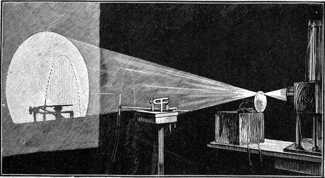
To G. F. Rodwell, the first science master appointed at Marlborough College, this book is dedicated by the author, as a token of esteem and gratitude, and in the hope that it may excite in a few young people some small fraction of the interest and enthusiasm which his arrival and his lectures awakened in the author — upon whom the light of science then shone for the first time.
To those readers who have grown up, and who may be inclined to find fault with this book on the ground that it is incomplete at so many points, or that much of it is elementary and well known, I would ask you to remember that these lectures were meant for young people, and for young people only.
And to those young people I would say: do your best to repeat the experiments described here. You will find that in many cases nothing is needed beyond a few pieces of glass or rubber tubing, or other simple things easily got hold of. If you will take that trouble you will be well repaid — and if, instead of being discouraged by a few failures, you keep at it with the best means at your disposal, you will soon find more to interest you in the experiments that only come right after some trouble than in the ones that work perfectly the first time. Some are so simple that no help can possibly be needed; some will probably prove too difficult even with help. But to encourage those who want to see the experiments I have described for themselves, I have given such hints at the end of the book as I thought would be most useful.
I have made free use of the published work of many distinguished men, among whom I may mention Savart, Plateau, Clerk Maxwell, Sir William Thomson, Lord Rayleigh, Mr. Chichester Bell, and Professor Rücker. Most of the experiments have been described by them; some I have taken from the journals; a few I have devised or arranged myself. I am also indebted to Professor Rücker for the use of various pieces of apparatus that had been prepared for his own lectures.
I don't suppose there is a single person in this room who hasn't blown a soap bubble at some time or other — and who hasn't looked at the perfection of its shape and the astonishing brilliance of its colours and wondered how such a magnificent object can be made so easily.
I hope none of you are tired of playing with bubbles yet, because, as I hope we shall see this week, there is a great deal more in an ordinary bubble than most people who play with them ever suspect.
Millais captured that wonder and admiration beautifully in a painting — it is called "Bubbles," and copies of it have been printed everywhere, thanks to the enterprise of the soap advertisers, so some of you have probably seen it. I hope these lectures will do nothing to diminish that feeling. I think you will find instead that it grows as you come to know more about the subject. You may be interested to hear that we are not the first young people to play with bubbles. Children were doing the same thing ages ago. None of the classical authors happens to mention it, but we know it all the same, because in the Louvre in Paris there is an Etruscan vase of the greatest antiquity with children on it blowing bubbles through a pipe. There is, however, no way of telling now whose soap they used.
Some of you may want to know why I have chosen soap bubbles as my subject. If so, I am glad to tell you. There are plenty of subjects that might strike a beginner as more marvellous, more brilliant or more exciting, but there are very few that bear so directly on the things we see every day. You cannot pour water out of a jug or tea out of a teapot — you cannot do anything at all with a liquid of any kind — without setting to work the very forces I am about to draw your attention to. So you can hardly fail to be reminded, over and over again, of what you hear and see in this room. And most important of all, perhaps: many of the things I am going to show you are so simple that you will be able to repeat my experiments for yourselves with no apparatus whatever, and you will find that far more interesting and far more instructive than merely listening to me and watching what I do.
There is one more thing I should like to explain, and that is why I am going to show you experiments at all. You will answer at once: because it would be so dreadfully dull if you didn't. Perhaps it would. But that is not the only reason. Let me remind you that when we want to find out something we do not know, there are two ways to go about it. We can ask somebody else who does know, or read what the most learned men have written on the matter — an excellent plan, provided somebody happens to be able to answer our question. Or we can take the other course, and arrange an experiment, and find out for ourselves. An experiment is a question which we ask of Nature, who is always ready to give a correct answer, provided we ask properly — that is, provided we arrange a proper experiment. An experiment is not a conjuring trick, put on simply to make you wonder; nor is it shown merely because it is beautiful, or because it breaks the monotony of a lecture. If any of my experiments turn out to be beautiful, or do make these lectures a little less dull, so much the better. But their real purpose is to let you see for yourselves what the true answers are to the questions I shall be asking.
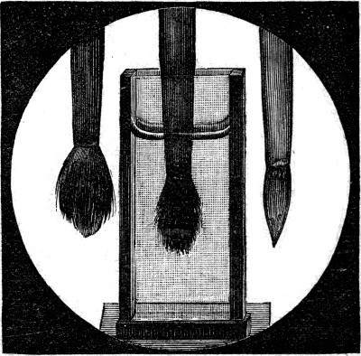
I shall begin with an experiment you have all tried dozens of times. I have in my hand an ordinary camel's-hair brush. If you want the hairs to cling together and come to a point, you wet it — and then you say the hairs cling together because the brush is wet. Let us try it. You cannot see the brush itself from across the room, so I am holding it in front of the lantern — the projector at the front of the room — and you can see it enlarged on the screen (Figure 1, left-hand). At the moment it is dry, and you can make out the hairs separately. Now I am dipping it in the water, as you can see, and as I take it out the hairs cling together, just as we expected (Figure 1, right-hand), because they are wet — so we are in the habit of saying. Now I shall hold the brush down in the water, and there it is perfectly plain that the hairs do not cling together at all (Figure 1, middle) — and yet surely they are wet now, being actually in the water. So it seems the reason we always give is not quite right. This experiment needs nothing but a brush and a glass of water, and it shows that the hairs of a brush cling together not only because they are wet, but for some other reason as well, which we do not yet know.
It also shows that a very common belief about opening your eyes under water has no foundation in fact. People often say that if you dive in with your eyes shut you cannot see properly when you open them under water, because the water gums your eyelashes down over your eyes, and that you must therefore dive in with your eyes open if you want to see anything below the surface. As a matter of fact this is not so at all. It makes no difference whether your eyes are open or shut when you go in; you can open them and see just as well either way. With the brush we have already seen that water does not make the hairs cling together, or cling to anything else, while they are under the water. That only happens when they are taken out. So this experiment, though it has not explained why the hairs cling together, has at least told us that the reason usually given is not enough.
Now I shall try another experiment, as simple as the first. Here is a pipe with water issuing from it very slowly, and it does not fall away in a continuous stream. A drop forms, and slowly grows, until it reaches a certain definite size — and then it suddenly falls away. I want you to notice that every time this happens the drop is exactly the same size and exactly the same shape. That cannot be mere chance. There must be some reason for the size being so definite, and the shape too. Why does the water stay there at all? It is heavy, and quite ready to fall, and yet it does not fall. It hangs on until it reaches a certain size, and then it suddenly breaks away — as though whatever was holding it were not strong enough to carry any greater weight. Mr. Worthington has carefully drawn the exact shape of a water drop at a series of different sizes, magnified, and you can see his drawings on the diagram on the wall (Figure 2).
These drawings will probably suggest to you that the water is hanging suspended inside an elastic bag, and that the bag tears, or is torn away, when the weight becomes too much for it to carry. It is quite true that there is really no bag at all — and yet the drops take a shape that suggests one. To show you that this is not a fancy of mine, I have stretched a thin sheet of rubber over a large wooden ring, held up on a tripod, and now, as I let water pour in from this pipe, you will see the rubber slowly stretching under the growing weight. What I particularly want you to notice is that it always takes one of the forms on the diagram. As the weight of water increases the bag stretches, and now that there is about a pailful in it, it is reaching a state that suggests it cannot last much longer. It is like the water drop an instant before it falls away — and now, suddenly, it changes its shape (Figure 3). It would tear itself away this moment if it were not for the fact that rubber does not stretch indefinitely: after a certain point it grows tight and will stand a much harder pull without giving way. So you see the great drop now hanging there permanently, in almost exactly the shape of a water drop at the point of breaking. I shall let the water out again with a siphon, and the drop slowly contracts.
Now in this case we plainly have a heavy liquid inside an elastic bag, whereas in the drop of water we have the same liquid and no bag that anyone can see. The two drops behave in almost exactly the same way, so we are naturally led to expect that their shape and their movements are due to the same cause — and that the little water drop has something holding it together like the rubber you see here.
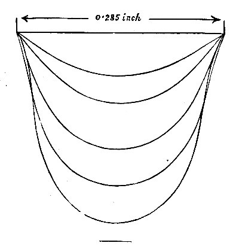
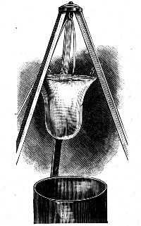
Let us see how this fits the first experiment, the one with the brush. That showed us that the hairs do not cling together merely because they are wet: it is also necessary that the brush should be taken out of the water. In other words, the surface — the skin — of the water has to be there to bind the hairs together. So if we suppose that the surface of water is like an elastic skin, then both experiments are explained at once: the wet brush and the hanging water drop. The strength of that skin is what physicists call the surface tension of the liquid; but I shall go on calling it the elastic skin, because that is the way to picture what it does.
Let us therefore try yet another experiment, and see whether water behaves in still other ways as though it had an elastic skin.
Here I have a plain wire frame fixed to a stem, with a weight at the bottom and a hollow glass globe fastened on with sealing-wax. The globe is big enough to float the whole thing in water with the frame up in the air. I can of course press it down until the frame touches the water. And to make the frame's movement easier to see, there is a paper flag fixed to it.
Now if water behaves as though its surface were an elastic skin, then it ought to resist the frame passing upwards through it — and I am holding the frame below the surface at this moment. I let go. Instead of bobbing up, as it would if there were no such action, it stays tethered down by this skin of the water. If I disturb the water so as to let one corner of the frame out, then, as you see, it dances up immediately (Figure 4). You can tell that the skin of the water must have been reasonably strong, because it takes a weight of about a quarter of an ounce placed on the frame to make the whole thing sink.
This apparatus was first described by Van der Mensbrugghe, and I shall be using it again in a few minutes.
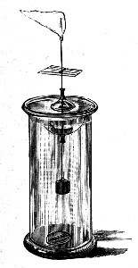
I can show you in a more striking way still that there is this elastic layer, this skin, on pure clean water. Here is a small sieve of wire gauze, coarse enough for an ordinary pin to go through any of the holes — and there are about eleven thousand of those holes in the bottom of it. Now as you know, clean wire is wetted by water: dip it in and it comes out wet. Some materials, on the other hand, are not wetted — not really touched — by water at all. Paraffin wax is one, the wax that paraffin candles are made of, as you can see for yourselves if you dip a paraffin candle into water. I have melted a quantity of paraffin in a dish and dipped this gauze in it to coat the wire all over, shaking it well while it was hot to knock the wax out of the holes. You can see on the screen that the holes are open, all but one or two, and that an ordinary pin passes through easily enough. That is the apparatus.
Now if water has an elastic skin that takes force to stretch, the water ought not to run through these holes at all readily. It ought not to be able to get through at all unless it is forced, because at every single hole the skin would have to be stretched to let the water reach the other side. All this, you understand, only holds good because the water does not wet — does not really touch — the wire. To stop the water I am about to pour in from hitting the bottom hard enough to be driven straight through, I have laid a small piece of paper in the sieve, and I am pouring the water onto the paper to break its fall (Figure 5). I have now poured in about half a tumbler, and I could put in more. I take the paper away — and not a drop runs through. If I give the sieve a jolt, the water is driven to the other side, and in a moment it has all escaped.
Perhaps this reminds you of one of the exploits of our old friend Simple Simon,
"Who went for water in a sieve, But soon it all ran through."
But you see, if you only manage the sieve properly, this is not quite so absurd as people generally suppose.
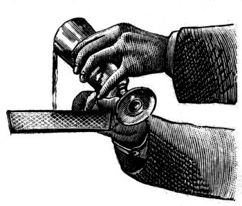
If I now shake the water off the sieve, I can, for the same reason, set the sieve floating on water: its weight is not enough to stretch the water's skin through all those holes. The water stays on the other side, and the sieve floats — even though, as I said, there are eleven thousand holes in the bottom of it, every one of them big enough to let an ordinary pin through. This experiment also shows how very difficult it is to write real and perfect nonsense.
You may remember one of the pieces in Lear's book of Nonsense Songs.
"They went to sea in a sieve, they did,
In a sieve they went to sea:
In spite of all their friends could say,
On a winter's morn, on a stormy day,
In a sieve they went to sea.
"They sailed away in a sieve, they did,
In a sieve they sailed so fast,
With only a beautiful pea-green veil,
Tied with a riband by way of a sail,
To a small tobacco-pipe mast;"
And so on. You see that it is perfectly possible to go to sea in a sieve — provided the sieve is big enough and the water is not too rough — and that every particular of those lines has now been carried out (Figure 6).
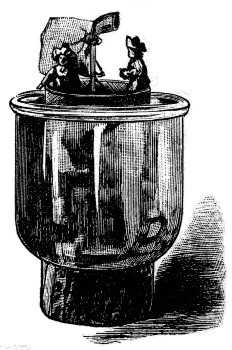
Let me give one more example of the power of this elastic skin of water. If you want to pour water out of a tumbler into a narrow-necked bottle, you know how it goes: pour slowly and nearly all of it runs down the side of the glass and gets spilled about; pour quickly and there is no room for so much water to get into the bottle at once, so it gets spilled again. But take a piece of stick, or a glass rod, and hold it against the edge of the tumbler, and the water runs down the rod and into the bottle, and none is lost (Figure 7). You may even hold the rod on the slant, as I am doing now, and still the water runs down the wet rod, because this elastic skin forms a kind of tube that keeps the water from escaping. People often make use of this in the country to carry water from the gutters under the roof down into a rain barrel. A piece of stick does nearly as well as an iron pipe, and it does not cost anything like as much.
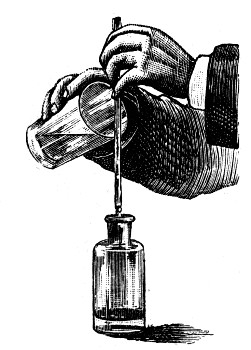
I think I have now done enough to show that there is a kind of elastic skin on the surface of water. I do not mean that there is anything on the surface which is not water. I mean that the water, while it is at the surface, behaves differently from the way it behaves inside — that it acts as though it were an elastic skin made of something like very thin rubber, except that it is perfectly and absolutely elastic, which rubber is not.
You are now in a position to understand why water in narrow tubes does not find its own level, but behaves in a most unexpected way. I have put a dish of water in front of the lantern, coloured blue so that you can see it more easily. Now I dip a very narrow glass pipe into the water, and at once the water rushes up and stands about half an inch above the general level. The inside of the tube is wet. The elastic skin of the water is therefore attached to the tube, and it goes on hauling the water up until the weight of water raised above the general level is equal to the force the skin can exert.
Now suppose I take a tube about twice as wide. This pulling action, going on all round the tube, will now lift twice the weight of water. But that will not make the water rise twice as high, because the wider tube holds so much more water for a given length than the narrow one does. It will not even lift the water as high as the narrow tube did. Suppose it were lifted that high: the weight of raised water would then be four times as great, and not merely twice as great, which is what you might guess at first. So it will only raise the water half as high — and now that the two tubes are standing side by side, you can see the water in the smaller one standing at twice the height it reaches in the larger. In the same way, if I took a tube as fine as a hair, the water would go up very much higher still. That is why this is called capillarity, from the Latin word capillus, a hair — because the action is so marked in a tube the size of a hair.
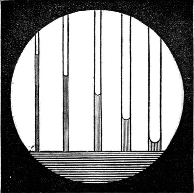
Now suppose you had a great many tubes of all sizes and set them out in a row, the smallest at one end and the rest in order of size. Plainly the water would rise highest in the smallest, and less and less in each tube along the row (Figure 8), until by the time you reached a very wide tube you would not be able to see that the water had been raised at all.
You can get the same sort of effect very easily by taking two square pieces of window glass and putting them face to face, with an ordinary match, or a small fragment of anything, to hold them a little apart along one edge, while they meet along the opposite edge. A rubber band stretched round them will hold them like that. Now I take this pair of plates and stand it in a dish of coloured water, and you see at once that the water creeps right up to the top of the plates along the edge where they meet; and as the gap between the plates gradually widens, so the height the water reaches gradually falls. The result is that the surface of the liquid forms a beautifully regular curve, which mathematicians call a rectangular hyperbola (Figure 9). I shall have more to say presently about this curve and some others, so for now I shall only tell you why it appears: as the gap between the plates gets wider the height gets less, or — which comes to the same thing — because the weight of liquid held up at any small part of the curve is always the same.
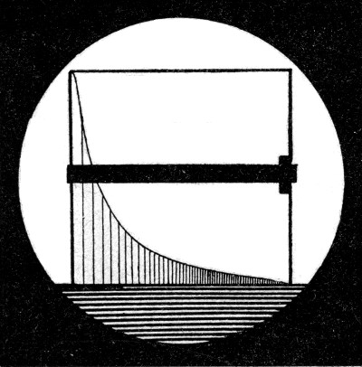
If the plates, or the tubes, had been made of a material that water does not wet, the surface tension would have had the opposite effect: it would drag the liquid away from the narrow spaces, and the more so the narrower the space. It is not easy to show this well with paraffined glass plates or tubes and water, so I shall use another liquid instead — one which does not wet or really touch clean glass at all, namely mercury. You cannot see through mercury, so it will not do to stand a narrow tube in it and show that the level inside is lower than outside. But the same result can be had by joining a wide tube and a narrow one together. Then, as you see on the screen, the mercury stands lower in the narrow tube than in the wide one — whereas in a similar piece of apparatus the reverse is true of water (Figure 10).
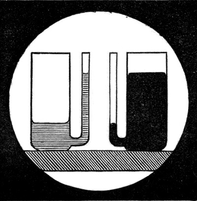
I want you now to think about what happens when two flat plates, partly immersed in water, are held close together. We have seen that the water rises between them. Take the parts of the two plates which have air between them and air outside them as well, marked a in Figure 11. Each of these is pressed equally in opposite directions by the pressure of the air, so these parts have no tendency either to approach or to move away from one another. Take next the parts which have water on both sides, marked c. These are pressed equally in opposite directions by the pressure of the water, so again there is no tendency to move either way.
But now take the parts marked b, which have water between them and air outside. You might think these would be pushed apart, because the water between them presses harder than the air outside can press — and so you might expect that on this account a pair of plates free to move would fly apart at once. Natural as that idea is, it is wrong, and for this reason. The water raised between the plates stands above the general level, and it must therefore be under less pressure — because, as everybody knows, the pressure increases as you go down in water, and so it must get less as you go up. The water between the plates is thus under less pressure than the air outside, and on the whole the plates are pushed together.
You can easily see that this is so. I have two very light hollow glass beads, the kind used to decorate a Christmas tree. If one end is stopped with sealing-wax they will float in water. Both are wetted by water, so the water between them is slightly raised — they behave like the two plates, though not so powerfully. Even so, you will have no difficulty in seeing that the moment I leave them alone they rush together with considerable force. Now look at the second figure in the diagram, which shows two plates neither of which is wetted. I think you will see, without any explanation from me, that these too ought to be pressed together — and experiment says they are. Two other beads that have been dipped in paraffin wax, so that neither is wetted by water, float up to one another again as soon as they are separated, exactly as the clean glass beads did, as though they attracted each other.
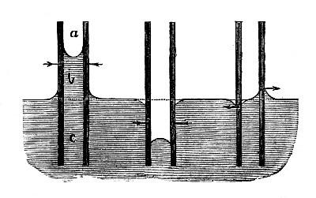
If you look at these two cases again, you will see that a plate which is wetted tends to move towards the higher level of the liquid, while a plate which is not wetted tends to move towards the lower level — that is, when the levels on the two sides have been made different by capillary action. So now suppose one plate is wetted and the other is not. Then, as the diagram shows, though imperfectly, the liquid between the plates stands higher than the water outside where it meets the plate that is not wetted, and lower than the water outside where it meets the plate that is. Each plate therefore tends to move away from the other — as you can see now that I have one paraffined ball and one clean ball floating in the same water. They appear to repel one another.
You may also notice that the surface of the liquid close to a wetted plate is curved with the hollow of the curve upwards, while close to a plate that is not wetted the reverse is true. I can show you that this curvature is of the first importance by a very simple experiment, which you can repeat at home as easily as the last one. Here is a clean glass bead floating in water in a clean glass vessel which is not quite full. The bead always goes to the side. It is impossible to make it stay in the middle; it gets to one side or the other immediately. Now I shall gradually add water until the level stands a little higher than the rim of the vessel. The surface is then rounded up near the glass, while it is hollow near the bead — and now the bead sails away towards the centre, and cannot by any means be persuaded to stop near either side.
With a paraffined bead the reverse happens, as you would expect. Instead of a paraffined bead you may use an ordinary needle, which you will find will float on water in a tumbler if you lay it on very gently. If the tumbler is not quite full, the needle will always move away from the edge; but if the tumbler is slightly overfilled, it will work its way up to one side, and possibly roll over the rim. Any bubbles, on the other hand, that were clinging to the glass beforehand will shoot away from the edge the instant the water stands above the rim, in the most sudden and surprising manner. This abrupt change is easiest to see if you nearly fill the glass with water and then gradually dip a cork in and take it out again, which makes the level change slowly.
So far I have given you no idea of the force this elastic skin of water exerts. Measurements made with narrow tubes, with drops, and in other ways, all agree that it is almost exactly equal to the weight of three and a quarter grains to the inch — a grain being the old small unit of weight, about sixty-five thousandths of a gram. And we have not yet asked whether other liquids behave in the same way, and if they do, whether the strength of the elastic skin is the same in every case.
You now see a second tube, identical with the one the water drops were forming on, but with alcohol in it instead. Drops are forming, and you can see at once that although alcohol makes drops which have a definite size and shape of their own when they fall away, the alcohol drops are nothing like as large as the water drops falling beside them. Two possible reasons might be given for this. Either alcohol is a heavier liquid than water, which would account for the smaller drop if the skin were equally strong in both; or, if alcohol is not heavier than water, its skin must be weaker than the skin of water. As it happens, alcohol is a lighter liquid than water — so the skin of alcohol must be weaker still than that.
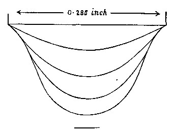
We can easily put this to the test of experiment. In the game called tug-of-war you know perfectly well which side is the stronger: it is the side that pulls the other over the line. So let us make alcohol and water play the same game. The water is coloured blue so that you can see it, and it is lying in a shallow layer on the bottom of this white dish. At the moment the skin of the water is pulling equally in all directions, so nothing happens. But if I pour a few drops of alcohol into the middle, then along the line that separates the alcohol from the water we have alcohol on one side pulling inwards while water on the other side pulls outwards — and you see the result. The water wins. It rushes away in all directions, carrying a quantity of the alcohol with it, and leaves the bottom of the dish dry (Figure 13).
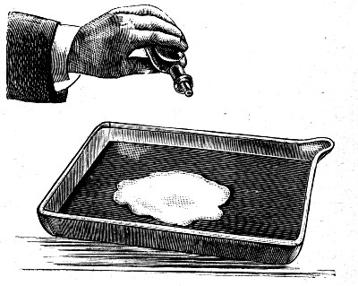
This difference between the strength of the skin of alcohol and the skin of water — or of water containing much or little alcohol — gives rise to a curious motion you can see on the side of a wine glass containing a reasonably strong wine, such as port. The liquid is seen to climb up the sides of the glass, gather itself into drops, and run down again, and this goes on for a long time. The explanation is this. The thin layer of wine on the side of the glass is exposed to the air, and so it loses its alcohol by evaporation faster than the wine down in the glass does. It therefore becomes weaker in alcohol — stronger in water — than the wine below, and for that reason it has a stronger skin. So it hauls more wine up from below, and this goes on until there is so much that drops form and it runs back into the glass, as you can see now on the screen (Figure 14).
There can be no doubt that this movement is what is referred to in Proverbs 23:31: "Look not thou upon the wine when it is red, when it giveth his colour in the cup, when it moveth itself aright."
If you remember that this movement only happens with strong wine, and that it must have been familiar to everybody at the time those words were written, and used as a test of the strength of wine — because in those days everybody drank wine — then I think you will agree that this is the right explanation of the verse. And I would ask you to consider whether it may not be the same with other passages which now seem to carry no meaning at all for us: they may equally have referred to the common knowledge and the everyday customs of the day, of which we simply happen to be ignorant.
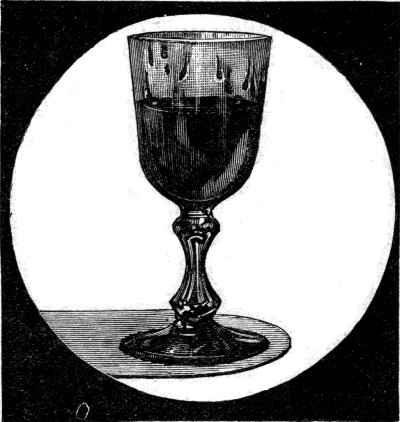
Ether, in the same way, has a skin weaker than the skin of water, and the very smallest quantity of ether on the surface of water produces a noticeable effect. For instance, the wire frame I left in the water some time ago is still held down against the water's skin: the buoyancy of the glass bulb is trying to push it through, and the upward force is just not quite sufficient. Now I shall pour a few drops of ether into a glass and simply pour the vapour out over the surface of the water — not a drop of the liquid goes over — and almost immediately enough ether has condensed on the water to weaken the skin so much that the frame jumps up out of the water.
There is a well-known case in which the difference between the strengths of the skins of two liquids can be either a source of vexation or, if you know how to make use of it, an advantage. If you spill grease on your coat you can take it out very well with benzine — a petroleum solvent. Now if you simply apply benzine to the grease, and then apply fresh benzine to what is already there, this is what happens. You have greasy benzine on the coat, and you are applying fresh benzine to it. As it happens, greasy benzine has a stronger skin than pure benzine. So the greasy benzine plays tug-of-war with the pure benzine, and being the stronger it wins and runs away in all directions; and the more benzine you apply, the further the greasy benzine spreads, carrying the grease with it. But if you follow the directions on the bottle, and first make a ring of clean benzine round the grease spot and then apply benzine to the grease itself, then the greasy benzine runs away from the ring of pure benzine, heaps itself together in the middle, and escapes into the fresh rag you apply — so that all the grease is removed.
There is a difference again between hot grease and cold, as you can see for yourselves when you get home if you watch an ordinary candle burning. Close to the flame the grease is hotter than it is out towards the edge. It therefore has a weaker skin, and so a perpetual circulation is kept up: the grease runs outwards along the surface and back again underneath, carrying little specks of dust which make the movement visible, and keeping the candle burning steadily.
You probably know how to take grease stains out with a hot poker and blotting paper. Here again the same kind of action is at work.
A piece of lighted camphor floating on water is another example of movement set up by differences in the strength of the water's skin, in this case caused by the camphor.
I will give only one more example. If you are painting in watercolours on greasy paper, or on certain shiny surfaces, the paint will not lie smoothly but runs together in that well-known way. A very little ox gall, however, makes it lie perfectly, because ox gall so reduces the strength of the skin of water that the water will wet surfaces pure water will not wet. You can see this reduction of the surface tension if I use the same wire frame a third time. The ether has evaporated by now, so I can once more make the frame rest against the surface of the water; and very soon after I touch the water with a brush carrying ox gall, the frame jumps up as suddenly as it did before.
There is no need for me to insist any further on the fact that the outside of a liquid behaves as though it were a perfectly elastic skin, stretched with a certain definite force.
Now suppose you take a small quantity of water — say as much as would go into a nutshell — and suddenly let go of it. What will happen? Of course it will fall and be dashed against the ground. Or suppose you take the same quantity and lay it carefully on a cake of paraffin wax dusted over with lycopodium powder, which is the spore of the club moss, so that the water does not wet it. What happens then? Here again the weight of the drop — the thing that makes it fall when it is not held — squeezes it against the paraffin and spreads it out into a flat cake.
What would happen if the weight of the drop, the force pulling it downwards, could be prevented from acting at all? In that case the drop would feel nothing but the effect of the elastic skin, which would try to pull it into whatever shape makes the surface as small as possible. It would in fact become a perfectly round ball almost at once, because no other shape gives so small a surface. And if, instead of taking so much water, we took a drop about the size of a pin's head, then the weight tending to squash it out or make it fall would be very much less, while the skin would be just as strong as before — and would in fact have a greater moulding power, though I cannot explain now why that is. So we should expect that if we take a small enough quantity of water, the moulding power of the skin will very nearly cancel the weight of the drop altogether, and that very small drops should look like perfect little balls.
If you have found that argument hard to follow, a very simple illustration will make it clear. Many of you probably know how to make this thing I am holding by folding paper (Figure 15). It is called a cat-box, because of its power of dispelling cats when it is filled with water and well thrown. This one, big enough to hold about half a pint, is made out of a small piece of the Times. You can fill it with water, carry it about, and throw it with your full strength, and the paper skin is strong enough to hold it together until it hits something, when of course it bursts and the water comes out. The large one, on the other hand, made out of a whole sheet of the Times, is barely able to withstand the weight of the water it will hold. It is only just strong enough to be filled and carried; you may then drop it from a height, but you cannot throw it.
In just the same way, the weaker skin of a liquid will not make a large quantity take the shape of a ball, but it will mould a tiny drop so perfectly that you cannot tell by looking at it that it is not perfectly round in every direction. This is easiest to see with mercury. A large quantity rolls about like a flat cake, while the very small drops you get by throwing some down violently on the table, and so breaking it up, look perfectly round. You can see the same difference in the beads of gold now on the screen (Figure 16). They are solid now, but they were melted and then allowed to cool without being disturbed. The large bead is flattened by its own weight; the small one looks perfectly round. And finally you can see the same thing with water if you dust a little lycopodium powder on the table: water falling on it will roll itself up into perfect little balls. You may even see it on a dusty day if you water the road with a watering can.
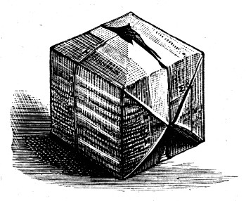
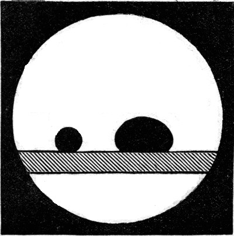
If it were not for the weight of liquids — the force with which they are pulled down towards the earth — large drops would be just as perfectly round as small ones. This was first shown, beautifully, by Plateau, the blind experimentalist, who placed one liquid inside another of exactly the same weight with which it does not mix. Alcohol is lighter than oil and water is heavier, so a suitable mixture of alcohol and water is exactly as heavy as oil, and oil immersed in such a mixture has no tendency either to rise or to fall.
I have here in front of the lantern a glass box containing alcohol and water, and I am going to let oil flow slowly in through a tube. You see that as I take the tube away the oil becomes a perfect ball as big as a walnut. There are now two or three of these balls of oil, all perfectly round. I want you to notice that when I strike them on one side, the large balls recover their shape slowly while the small ones become round again much more quickly.
There is a very beautiful effect that can be produced with this apparatus, and though I do not need it for my argument, it is well worth showing you now that the apparatus is set up. In the middle of the box there is an axle carrying a disc, and I can make the oil cling to the disc. Now if I turn the wire and the disc slowly, the oil turns with it. As I gradually increase the speed the oil tends to fly away in all directions, but the elastic skin holds it in. The result is that the ball becomes flattened at its poles, like the earth itself. As the speed rises further, the oil's tendency to escape at last becomes too much for the elastic skin, and a ring breaks away (Figure 17) — which contracts back onto the rest of the ball almost at once as the speed drops. If I spin it fast enough the ring breaks up into a series of balls, which you can see now. One cannot help being reminded of the heavenly bodies by this beautiful experiment of Plateau's, because there before you is a central body with a series of balls of different sizes all travelling round it in the same direction (Figure 18). But the forces at work in the two cases are entirely different, and what you are looking at has nothing whatever to do with the sun and the planets.
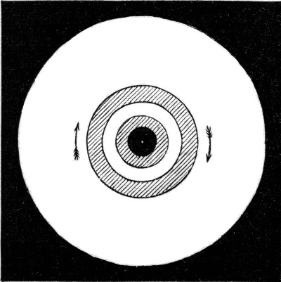
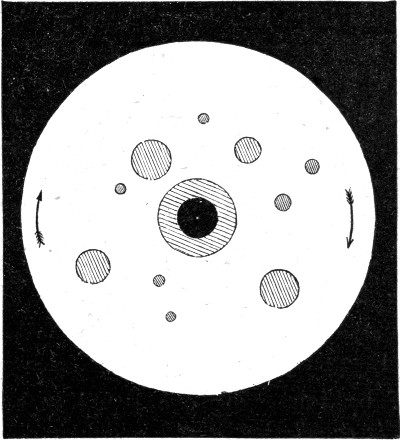
We have now seen that a large ball of liquid can be moulded by the elasticity of its skin, provided the disturbing effect of its weight is cancelled, as it was in that last experiment. In the case of a soap bubble that disturbing effect hardly matters at all, because a bubble is so thin that it scarcely weighs anything. You all know, of course, that a soap bubble is perfectly round — and now you know why. It is because the elastic film, trying to make itself as small as it can, must take the shape which has the smallest surface for the volume it encloses, and that shape is the sphere. I want you to notice here, as you did with the oil, that a large bubble knocked out of shape with a bat covered in baize or wool swings back and forth much more slowly than a small one.
The chief result I have tried to make clear today is this. The outside of a liquid behaves as though it were an elastic skin, which will, so far as it is able, mould the liquid inside it so that it is as small as possible. Usually the weight of the liquid, especially when there is a lot of it, is too much for the feebly elastic skin, and its power may pass unnoticed. We get rid of the disturbing effect of weight by immersing one liquid in another of equal weight with which it does not mix — and it is hardly noticeable in any case when we examine very small drops, or when a bubble is blown, because in both of those the weight is almost nothing at all, while the elastic power of the skin is exactly as great as ever.
In the last lecture I never actually showed you by direct experiment that a soap film, or a bubble, really is elastic, like a piece of stretched rubber.
A soap bubble consists of a thin layer of liquid, which must of course have both an inside and an outside surface — an inside and an outside skin — so it must be elastic, and this is easily shown in a number of ways. Perhaps the easiest is to tie a thread loosely across a ring and then dip the ring into soap water. When you take it out there is a film stretched across the ring, and the thread moves about in it quite freely, as you can see on the screen. But if I break the film on one side, the thread is immediately pulled over as far as it will go by the film on the other side, and now it is tight (Figure 19). You will notice, too, that it is part of a perfect circle — because that shape makes the space on one side as large as possible, and therefore the space on the other side, where the film is, as small as possible.
Or take this second ring, in which the thread is doubled for a short distance in the middle. If I break the film between the two threads they are pulled apart at once, and pulled into a perfect circle (Figure 20) — because that is the shape which makes the space inside as large as possible, and so leaves the space outside it as small as possible. And notice that although the circle will not allow itself to be pulled out of shape, it can still move about in the ring quite freely, because moving it makes no difference at all to the space outside it.
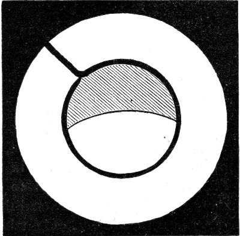
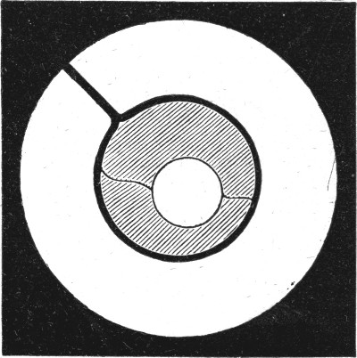
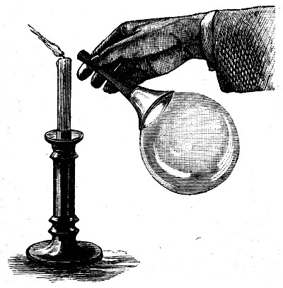
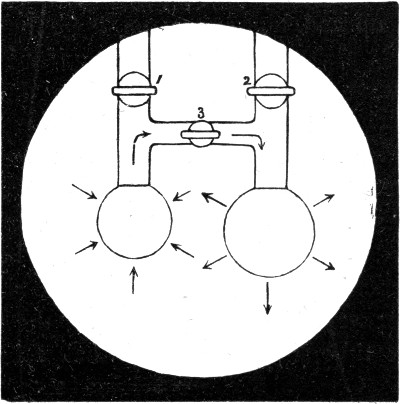
I have now blown a bubble on a wire ring. I shall hang a small ring on it, and to make what happens clearer I shall blow a little smoke into the bubble. Now that I have broken the film inside the lower ring, you can see the smoke being driven out and the ring being lifted up — and both of those show the elastic nature of the film. Or again: I have blown a bubble on the end of a wide pipe, and on holding the open end of the pipe to a candle flame, the air rushing out blows the flame out at once, which shows that the soap bubble is behaving like an elastic bag (Figure 21).
You can see, then, that because of the elastic skin of a soap bubble the air inside is under pressure, and will get out if it can. Now which would you think squeezes the air inside it harder — a large bubble or a small one? We shall find out by trying, and then see whether we can say why.
You now see two pipes, each with a tap, joined together by a third pipe which has a third tap in it. First I shall blow one bubble and shut it off with tap 1 (Figure 22), then the other, and shut it off with tap 2. They are now nearly equal in size, but the air cannot yet pass from one to the other, because tap 3 is turned off. Now, if the pressure in the larger one is the greater, it will blow air into the other when I open this tap until the two are equal in size. If, on the other hand, the pressure in the small one is the greater, it will blow air into the large one and shrink until it has vanished altogether. Let us try it. You see at once that the moment I open tap 3, the small bubble shuts up and blows out the large one — which shows that there is a greater pressure in a small bubble than in a large one. The directions in which the air and the films move are shown by the arrows in the figure.
I particularly want you to notice this and to remember it, because a great deal depends on this experiment. To fix it in your memory I shall show you the same thing another way. In front of the lantern there is a little tube bent into a U and half filled with water. One end of the U is joined to a pipe on which a bubble can be blown (Figure 23). You will now be able to see how the pressure changes as the bubble grows, because the water will be pushed further round when the pressure is greater and less far when it is less. At the moment the bubble is very small, and the pressure, as measured by the water, is about a quarter of an inch on the scale. The bubble is growing, and the pressure shown by the water in the gauge is falling — until, when the bubble is twice the size it was, the pressure is only half what it was. And this is always true: the smaller the bubble, the greater the pressure.
Since the film is always stretched with the same force whatever the size of the bubble, it is clear that the pressure inside can only depend on the curvature of the bubble. Now with lines, ordinary language already tells us that the larger a circle is, the less its curvature: a piece of a small circle is called a quick or a sharp curve, while a piece of a very large circle is only slightly curved. And if you take a piece of an enormously large circle, you cannot tell it from a straight line at all, and you say it is not curved. It is just the same with part of the surface of a ball: the larger the ball, the less it is curved. If the ball is very large indeed — say eight thousand miles across — you cannot tell a small piece of it from a true plane. Level water is part of such a surface, and you know that still water in a basin looks perfectly flat, though on a very large lake, or on the sea, you can see that it is curved. We have seen that in large bubbles the pressure is small and the curvature is small, while in small bubbles the pressure is great and the curvature is great. The pressure and the curvature rise and fall together. That is the lesson taught us by the experiment of the two bubbles, one of which blew out the other.
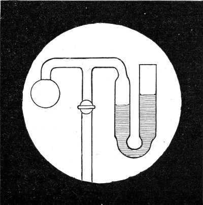
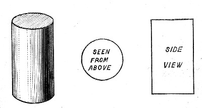
A ball, or sphere, is not the only shape you can give a soap bubble. If you take a bubble between two rings you can draw it out until at last it has the shape of a round straight tube — a cylinder, as it is called. We have talked about the curvature of a ball; now what is the curvature of a cylinder? Looked at sideways, the edge of the wooden cylinder on the table appears straight, that is, not curved at all; but looked at from above it appears round, and plainly has a definite curvature (Figure 24). So what is the curvature of the surface of a cylinder?
We have seen that the pressure in a bubble depends on the curvature when bubbles are spheres, and this is true whatever shape they have. So if we can find what size of sphere produces the same pressure on the air inside it as a cylinder does, then we shall know that the curvature of the cylinder is the same as the curvature of the sphere which balances it. Now at each end of a short tube I shall blow an ordinary bubble; but I shall draw the lower bubble out, by means of another tube, into a cylinder, and then blow in more or less air until the sides of the cylinder are perfectly straight. That is done now (Figure 25). The pressure in the two bubbles must be exactly the same, because there is a free passage for air between them. And on measuring them, you see that the sphere is exactly twice the cylinder in diameter. But a sphere of that size has only half the curvature that a sphere of half its diameter would have. Therefore the cylinder — which we know has the same curvature as the large sphere, because the two balance — has only half the curvature of a sphere of its own diameter, and the pressure in it is only half the pressure in a sphere of its own diameter.
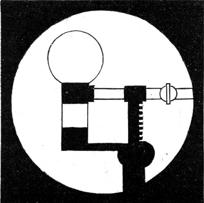
I must now take one more step in explaining this business of curvature. Now that the cylinder and the sphere are balanced, I shall blow in more air, making the sphere larger. What will happen to the cylinder? The cylinder, as you see, is very short. Will it be blown out too, or what? Now that I am blowing air in, you see the sphere enlarging, which relieves the pressure — and the cylinder develops a waist. It is no longer a cylinder; the sides are curved inwards. As I go on blowing and enlarging the sphere, the sides go on falling inwards, but not indefinitely.
If I were to blow the upper bubble until it was enormous, the pressure would become extremely small. Let us make the pressure nothing at all, at once, by simply breaking the upper bubble, so that air can pass freely from the inside to the outside of what was the cylinder. Let me repeat the experiment on a larger scale. I have two large glass rings, and I can draw out a film of the same kind between them. Not only is the outline of the soap film curved inwards; it is exactly the same shape as the smaller one was (Figure 26).
Now, since there is no pressure, there ought to be no curvature, if what I have told you is correct. But look at the soap film. Who would dare to say that that is not curved? And yet we had satisfied ourselves that the pressure and the curvature rise and fall together. We seem to have arrived at an absurdity. Because the pressure is reduced to nothing we say the surface can have no curvature — and yet a single glance shows that the film is curved enough to have a most elegant waist. Now look at the plaster model on the table, which is a model of a mathematical figure that also has a waist.
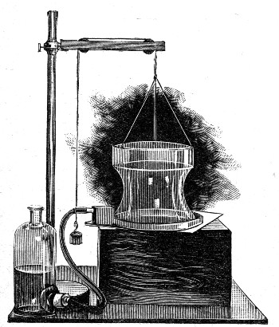
Let us therefore examine this cast more closely. I have a disc of card with exactly the same diameter as the waist of the cast. I hold it edgewise against the waist (Figure 27), and though you can see that it does not fit the whole curve, it fits the part close to the waist perfectly. That shows that this part of the cast is curved inwards, looked at sideways, to exactly the same extent that it is curved outwards, if you could look at it from above. So considering the waist alone: it is curved both towards the inside and away from the inside, depending on which way you look at it, and to the same extent in each direction. The inward curvature would make the pressure inside less; the outward curvature would make it more; and as the two are equal they exactly balance, and there is no pressure at all. If we could examine the bubble with the waist in the same way, we should find this was true not only at the waist but at every part of it.
Any curved surface like this, which at every point is equally curved in opposite directions, is called a surface of no curvature — and so what seemed an absurdity is now explained. This particular surface, which is the only one of its kind symmetrical about an axis apart from a flat surface, is called a catenoid, because it is like a chain, as you will see in a moment: catena is the Latin for a chain. I shall now hang a chain in a loop from a level stick and throw a strong light on it so that you can see it well (Figure 28). This is exactly the same shape as the side of a bubble drawn out between two rings and open to the air at the end.
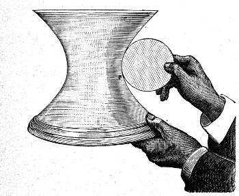
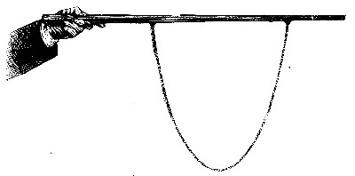
Note: if you find these geometrical relations too difficult to follow, skip the next few pages and pick up again at the paragraph that begins "We have found that the pressure in a short cylinder gets less..."
Let us now take two rings, place a bubble between them, and gradually alter the pressure. You can tell what the pressure is at any moment by looking at the part of the film which covers either ring — I shall call that part the cap. The cap must be part of a sphere, and we know that its curvature and the pressure inside rise and fall together.
I have now adjusted the bubble so that it is very nearly a perfect sphere. If I blow in more air the caps become more curved, showing an increased pressure, and the sides bulge out even further than the sides of a sphere (Figure 29). Now I have brought the whole bubble back to the spherical shape. A little more pressure, shown by the increased curvature of the cap, makes the sides bulge more; a little less pressure, shown by the flattening of the caps, makes them bulge less. Now the sides are straight, and the cap, as we have already seen, is part of a sphere twice the diameter of the cylinder. I am reducing the pressure further still, until the caps are plane — not curved at all. There is now no pressure inside, and so the sides have taken the form of a hanging chain, as we saw before. And now, finally, the pressure inside is less than the pressure outside, as you can tell from the caps being drawn inwards, and the sides have an even narrower waist than the catenoid.
We have now seen seven curves as we gradually reduced the pressure, namely:
1. Outside the sphere
2. The sphere
3. Between the sphere and the cylinder
4. The cylinder
5. Between the cylinder and the catenoid
6. The catenoid
7. Inside the catenoid
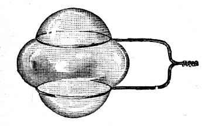
Now I am not going to say a great deal more about all these curves, but I must mention the very curious properties they have. In the first place, each of them must have the same curvature at every part as the piece of sphere which forms the cap. In the second place, each must be the curve of the smallest possible surface which can both enclose the air and meet the rings. And finally, since they pass imperceptibly one into another as the pressure gradually changes, there must — distinct curves though they are — be some curious and intimate relation between them. This last point is a little difficult, but I shall explain it.
If I were to tell you that these curves are the roulettes of the conic sections, I suppose I should alarm you and explain nothing at all. So I shall not put it that way. Instead I shall show you a simple experiment which throws some light on the matter, and which you can try for yourselves at home.
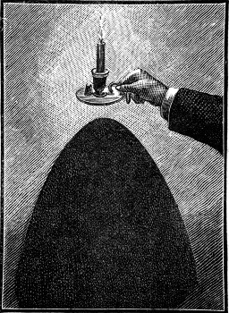
Here is an ordinary bedroom candlestick with a flat round base. Hold the candlestick exactly upright near a white wall, and you will see the shadow of the base on the wall below; the outline of that shadow is a symmetrical curve called a hyperbola. Now gradually tilt the candle away from the wall. You will notice the sides of the shadow branching away less and less; and when you have tilted the candle far enough that the flame is exactly above the edge of the base — and you will know when that is, because the falling grease will just fall on the edge of the candlestick and splash onto the carpet, as it is doing now — the sides of the shadow near the floor will be almost parallel (Figure 30), and the shadow will have become a curve known as a parabola.
Tilt the candlestick further, so that the grease misses the base altogether and falls in a gentle stream onto the carpet, and you will see that the sides of the shadow have curled round and met on the wall. You now have a curve like an oval, except that its two ends are alike, and this is called an ellipse. Go on tilting, and when the candle is just level, with the grease pouring away, the shadow will be almost a circle — it would be an exact circle if the flame did not flare up. And if you go on tilting the candle until the candlestick is upside down, the curves you have already had will be repeated in the reverse order, but above you instead of below.
You may well ask what all this has to do with a soap bubble. You will see in a moment. When you light a candle, the base of the candlestick throws the space behind it into darkness, and the shape of that dark space — round everywhere, like the base, and getting larger the further you go from the flame — is a cone, like the wooden model on the table. The shadow cast on the wall is simply the part of the wall which lies inside this cone. It is the same shape you would get by cutting a cone through with a saw, and that is why the curves I have shown you are called conic sections. You can see some of them ready made in the wooden model on the table.
If you look at the diagram on the wall (Figure 31) you will see a complete cone, upright at first (A), then tilted gradually into the positions I have described. The black line in the upper part of the diagram shows where the cone is cut through, and the shaded area below shows the true shape of these shadows, or pieces cut off, which are called sections. Now in each of these sections there are either one or two points, each of which is called a focus, and these are marked with conspicuous dots. In the case of the circle (D in Figure 31) this point is also the centre.
Now if this circle is made to roll like a wheel along the straight line drawn just below it, a pencil at the centre will rule out the straight line shown dotted in the lower part of the figure. But if we made wheels in the shape of any of the other sections, a pencil at the focus would certainly not draw a straight line. What shape it would draw is not obvious at first. Take any of the elliptic sections (C, E or F) which you see on either side of the circle. If these were wheels and were made to roll, the pencil as it went along would also move up and down, and the line it would draw is shown dotted, as before, in the lower part of the figure. In the same way the other curves, if made to roll along a straight line, would make pencils at their foci draw the other dotted lines.
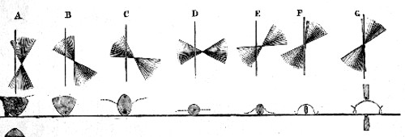
We are now almost in a position to see what the conic section has to do with a soap bubble. When a soap bubble was blown between two rings and the pressure inside was varied, its outline went through a series of shapes, some of which are represented by the dotted lines in the lower part of the figure; and in every case they could have been accurately drawn by a pencil at the focus of a suitable conic section rolled along a straight line.
One of the bubble shapes I called by its name, if you remember: the catenoid, which appears when there is no pressure. The dotted curve in the second figure, B, is that one. To show that this catenary really can be drawn that way, I shall roll a board cut into the shape of the corresponding section — which is called a parabola — along a straight edge, and let the chalk at its focus draw its curve on the blackboard. There is the curve; and it is, as I said, exactly the curve a chain makes when it hangs by its two ends. Now that the chain is hung up beside it, you see that it lies exactly over the chalk line.
All this is rather difficult to understand, but since these shapes that a soap bubble takes are such a beautiful example of the most important principle of continuity, I thought it would be a pity to pass them by. It may be put like this. A whole series of bubbles may be blown between a pair of rings. If the pressures are different the curves must be different. But in blowing them the pressures change slowly and continuously, so the curves cannot be altogether different in kind: different curves though they may be, they too must pass slowly and continuously one into another. Now we find that the bubble curves can be drawn by rolling wheels cut in the shape of the conic sections along a straight line. Therefore the conic sections, distinct curves though they are, must also pass slowly and continuously one into another. And we saw that this is exactly what they do, because as the candle was slowly tilted the curves did in fact change slowly and imperceptibly from one to the next.
There was only one parabola, and it appeared when the side of the cone was parallel to the plane of the section — that is, when the falling grease just touched the edge of the candlestick. There is only one bubble with no pressure, the catenoid, and it is drawn by rolling the parabola. As the cone is tilted further the sections become at first long ellipses, which grow rounder and rounder until a circle is reached, after which they grow narrower and narrower until a line is reached. The corresponding bubble curves are produced by a gradually increasing pressure, and, as the diagram shows, these bubble curves are at first wavy (C), then straight when a cylinder is formed (D), then wavy again (E and F), and at last, when the cutting plane — the black line in the upper figure — passes through the vertex of the cone, the waves become a series of semicircles, which is the ordinary spherical soap bubble. Now if the cone is tilted ever so little further, a new shape of section appears (G); and this one, rolled, draws a curious curve with a loop in it, though how that comes about would take too long to explain. It would also take too long to follow the cone into its further positions and trace the sections and the bubble curves that go with them. Careful study of the diagram may be enough to let you work out for yourselves what happens in every case. I should explain that the bubble surfaces are obtained by spinning the dotted lines in the lower part of Figure 31 about the straight line as an axis.
As you will soon find out if you try, you cannot make a great length of any of these curves with a soap bubble at one time; but you can get pieces of any of them with no more apparatus than a few wire rings, a pipe, and a little soap and water. You can even see a whole loop of the dotted curve in the first figure (A), which is called a nodoid — not a complete ring, because that is unstable, but part of such a ring.
Take a piece of wire, or a match, and fasten one end to a piece of lead so that it will stand upright in a dish of soap water and project half an inch or so above the surface. Hold a sheet of glass in one hand, resting on the middle of the match, and blow a bubble in the water against the match. As soon as the bubble touches the glass plate — which should be wetted with the soap solution — it will become a cylinder, and it will meet the glass plate in a true circle. Now tilt the plate very slowly. The bubble will at once work round to the lower side and try to pull itself away from the match, and in doing so it will develop a loop of the nodoid, which would be exactly true in shape if the match or wire were slightly bent, so as to meet both the glass and the surface of the soap water at a right angle. I have described this in detail because it is not generally known that a complete loop of the nodoid can be made with a soap bubble at all.
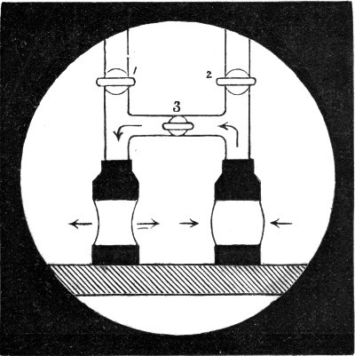
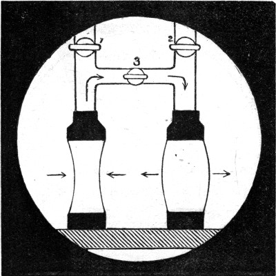
We have found that the pressure in a short cylinder gets less if it begins to develop a waist, and greater if it begins to bulge. So let us try to balance one with a bulge against one with a waist. The moment I open the tap and let the air pass, the one with the bulge blows air round to the one with the waist, and both become straight. In Figure 32 the direction in which the air and the sides of the bubbles move is shown by arrows.
Now let us try the same experiment with a pair of rather longer cylinders — say about twice as long as they are wide. They are ready now, one with a bulge and one with a waist. The instant I open the tap and let air pass from one to the other, the one with the waist blows the other out still further (Figure 33), until at last it has shut itself up. It behaves, in other words, in exactly the opposite way to the short cylinder.
If you try pairs of cylinders of different lengths you will find that the change happens when they are just over one and a half times as long as they are wide. And if you now imagine one of these tubes joined onto the end of the other, you will see that a cylinder more than about three times as long as it is wide cannot last more than a moment. For if one end were to contract ever so slightly, the pressure there would increase, and the narrow end would blow air into the wider end (Figure 34) until the sides of the narrow end met one another. The exact length of the longest cylinder that is stable is a little more than three diameters. The cylinder becomes unstable just when its length is equal to its circumference — and that is 3 1/7 diameters, almost exactly.
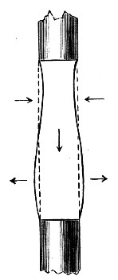
I shall now separate these rings gradually, keeping up a supply of air, and you will see that by the time the tube is nearly three times as long as it is wide it becomes very difficult to manage. Then suddenly it grows a waist, nearer one end than the other, and breaks off, forming a pair of separate and unequal bubbles.
Now if a cylinder of liquid of great length is suddenly formed and then left to itself, it clearly cannot keep that shape. It must break up into a series of drops. Unfortunately the changes happen so quickly in a falling stream of water that nobody could follow the movements of the separate drops merely by looking at them; but I hope to be able to show you in two or three ways exactly what is happening.
You may remember that we were able to make a large drop of one liquid inside another, because that way the effect of weight was cancelled; and since large drops swing and change their shape far more slowly than small ones, it is much easier to see what is going on. In this glass box I have water coloured blue, with paraffin floating on it that has been made heavier by mixing it with a bad-smelling and dangerous liquid called carbon disulfide.
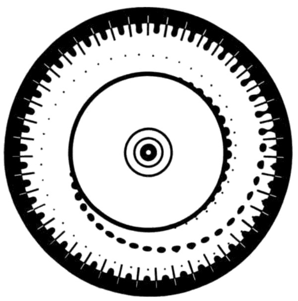
The water is only a very little heavier than the mixture. Now if I dip a pipe into the water and let it fill, I can then raise it and let drops form slowly. Drops as large as a shilling are forming now, and when each one has reached its full size a neck forms above it, which is drawn out by the falling drop into a little cylinder. Notice that the liquid of the neck has gathered itself into a little drop of its own, which falls away just after the large one. The action is going on so slowly now that you can follow it. Figure 35 contains forty-three consecutive views of the growth and fall of the drop, photographed at intervals of a twentieth of a second. For the use this figure is to be put to, see the Practical Hints at the end of the book.
If I fill the pipe with water again, and this time draw it rapidly up out of the liquid, I leave behind a cylinder, which breaks up into balls, as you can easily see (Figure 36). Now that I have this apparatus set up, I should like to show you as well that you can blow bubbles of water containing paraffin inside the paraffin mixture, and you will see some of them with other bubbles and drops of one liquid or the other inside them again. One of these compound bubble drops is resting stationary on a heavier layer of liquid at the moment, so that you can see it all the better (Figure 37). And if I draw the pipe rapidly up out of the box I shall leave a long cylindrical bubble of water containing paraffin, which, just like the cylinder of water, slowly breaks up into spherical bubbles.
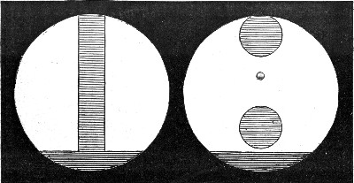
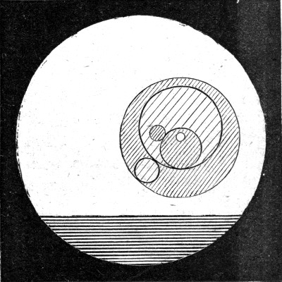
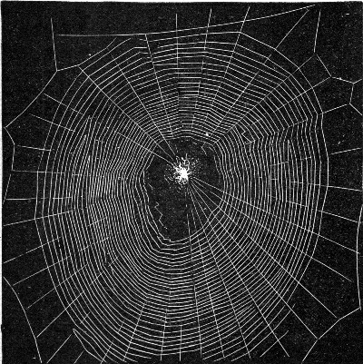
Having shown you that a very large liquid cylinder breaks up regularly into drops, I shall now go to the other extreme and take an exceedingly fine cylinder as my example. You see here a photograph of a spider on her geometrical web (Figure 38). If I had time I should like to tell you how the spider goes about making this beautiful structure, and a great deal more about these wonderful creatures; but I must do no more than point out that there are two kinds of thread in it. The ones that point outwards are hard and smooth; the ones that go round and round are very elastic, and are covered with beads of a sticky liquid.
Now in a good web there are over a quarter of a million of these beads, which catch the flies for the spider's dinner. A spider makes a whole web in an hour, and generally has to make a new one every day. She would not be able to go round sticking all those beads in place even if she knew how, because she would not have the time. Instead she makes use of the way a liquid cylinder breaks up into beads. She spins a thread and wets it as she goes with a sticky liquid, which is of course a cylinder at first. It cannot stay a cylinder; it breaks up into beads — as this photograph, taken through a microscope from a real web, shows beautifully (Figure 39). You see the alternate large and small drops, and sometimes you can even see extra small drops between those again. So that you can see how large these beads really are, I have placed a scale of thousandths of an inch alongside, photographed at the same time.
To prove to you that this is what happens, I shall now show you a web I have made myself, by stroking a quartz fibre with a straw dipped in castor oil. The same alternate large and small beads are there again, just as perfect as they were in the spider's web. In fact it is impossible to tell one of my beaded webs from a spider's by looking at them. And there is one further similarity: my webs are just as good as a spider's for catching flies.
You might say that a large cylinder of water in oil, or a microscopic cylinder on a thread, is not the same thing as an ordinary jet of water, and that you would like to see whether a jet behaves as I have described. The next photograph (Figure 40), taken by the light of an instantaneous electric spark and magnified three and a quarter times, shows a fine column of water falling from a jet. You can see that it is a cylinder at first; that as it goes down, necks and bulges begin to form; and that at last beads separate, with the little drops visible as well. The beads vibrate too, becoming alternately long and wide. There can be no doubt that the sparkling part of a jet, though it looks continuous, is really made up of beads passing before the eye so rapidly that it is impossible to follow them. (I should explain that for a reason which will appear later, I made a loud note by whistling into a key at the time this photograph was taken.)
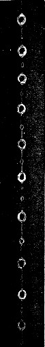
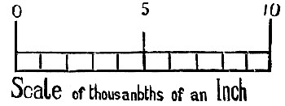
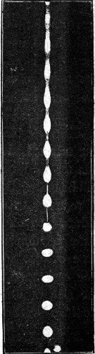
Lord Rayleigh has shown that in a stream of water one twenty-fifth of an inch in diameter, necks impressed on the stream — even imperceptible ones — grow a thousandfold in depth every fortieth of a second; so it is not hard to understand that in such a stream the water is already broken through before it has fallen many inches.
He has also shown that free water drops vibrate at a rate which can be worked out as follows. A drop two inches across makes one complete vibration in one second. If the diameter is reduced to a quarter, the time of vibration is reduced to an eighth; if the diameter is reduced to a hundredth, the time is reduced to a thousandth; and so on. The same relation between diameter and time of breaking up applies to cylinders as well.
So we can see at once how fast a bead of water the size of one of those in the spider's web would vibrate, if it were pulled out of shape and suddenly let go. Take the diameter as one eight-hundredth of an inch — and it is really finer than that. Then the bead is one sixteen-hundredth the diameter of a two-inch bead, which makes one vibration a second. It will therefore vibrate sixty-four thousand times as fast, or sixty-four thousand times a second. Water drops the size of the little beads, rather less than one three-thousandth of an inch across, would vibrate half a million times a second — under the influence of nothing but the feebly elastic skin of water. That shows how powerful the influence of the feebly elastic water skin is on drops of water that are small enough.
I shall now set a small fountain playing, and let the water patter down as it falls onto a sheet of paper. You can see both the fountain itself and its shadow on the screen. Notice that the water leaves the nozzle as a smooth cylinder, that it presently begins to glitter, and that the separate drops scatter over a great space (Figure 41). Now why should the drops scatter? All the water comes out of the jet at the same speed and starts off in the same direction, and yet after a short distance the separate drops are by no means following the same paths.
Instead of explaining this and then showing experiments to test the explanation, I shall reverse the usual order and show you one or two experiments first — experiments which I think you will all agree are so like magic, so wonderful and yet so simple, that if they had been performed a few hundred years ago the rash person who showed them might have run a serious risk of being burnt alive.
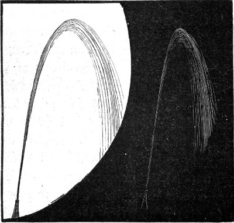
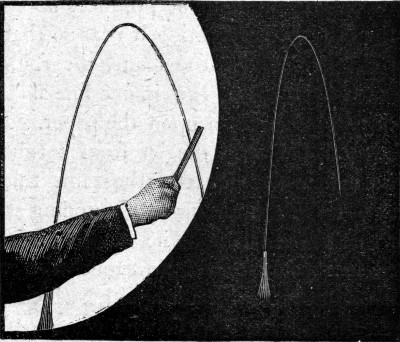
You see the water of the jet scattering in all directions, and you hear it pattering on the paper it falls on. Now I take a stick of sealing-wax out of my pocket — and instantly everything changes, even though I am some way off and am touching nothing at all. The water stops scattering; it travels in one continuous line (Figure 42) and falls on the paper with a loud rattling noise which must remind you of the rain in a thunderstorm. I come a little nearer to the fountain and the water scatters again, but this time quite differently: the falling drops are much larger than before. The moment I hide the sealing-wax the jet goes back to its old appearance, and as soon as I take it out again the water travels in a single line.
Now instead of the sealing-wax I shall take a smoky flame, easily made by dipping a piece of cotton wool on the end of a stick into benzine and lighting it. As long as the flame is held away from the fountain it has no effect at all; but the instant I bring it close enough for the water to pass through the flame, the fountain stops scattering — it all runs in one line and falls on the paper in a dirty black stream. Ever so little oil fed into the jet from a tube as fine as a hair does exactly the same thing.
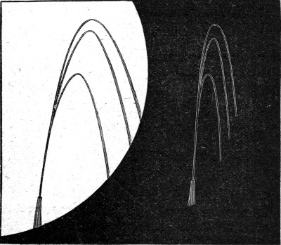
I shall now set a tuning fork sounding at the other side of the table. The fountain has not altered in appearance. Now I touch the stand of the tuning fork with a long stick which rests against the nozzle. Again the water gathers itself together, even more perfectly than before, and the paper it falls on is humming out a note — the same note the tuning fork is giving. If I alter the rate at which the water flows you will see that the appearance changes again, but it is never like a jet which has no musical sound acting on it. Sometimes the fountain breaks up into two or three distinct lines, and sometimes into many more, as though the water were coming out of that many tubes of different sizes pointing in slightly different directions (Figure 43). The effect of different notes could easily be shown if somebody were to sing to the piece of wood that holds the jet. I can make noises of different pitches, which for this purpose are perhaps better than musical notes, and you can see that with every new noise the fountain takes on a different appearance.
You may well wonder how such trifling influences — a stick of sealing-wax, a smoky flame, a more or less musical noise — can produce this mysterious result. But the explanation is not as difficult as you might expect.
I hope to make this clear when we meet again.
At the end of the last lecture I showed you some curious experiments with a fountain of water, which I now have to explain.
Consider what I said about a liquid cylinder. If it is a little more than three times as long as it is wide, it cannot keep its shape; and if it is made very much more than three times as long, it will break up into a series of beads. Now suppose a series of necks could somehow be developed along a cylinder, less than three diameters apart. Some of them would tend to heal up, because a piece of cylinder less than three diameters long is stable. If they were about three diameters apart, the form being then unstable, the necks would grow more pronounced as time went on and would break through at last, so that beads would be formed. And if the necks were made at distances of more than three diameters apart, the cylinder would go on breaking up by the narrowing of those necks — and it would break up most easily of all when the necks were just four and a half diameters apart.
In other words: if a fountain issued from a nozzle held perfectly still, the water would break into beads most easily at a spacing of four and a half diameters; but it would break into a greater number closer together, or a smaller number further apart, if slight disturbances of the jet impressed very slight waists on the issuing cylinder of water. When you make a fountain play from a jet which you hold as still as you can, there are still accidental tremors of all kinds, and these impress slightly narrow and slightly wide places on the issuing cylinder at irregular distances. So the cylinder breaks up irregularly, into drops of different sizes at different distances apart.
Now these drops, at the moment they are separating from one another and drawing out the waist, as you have seen, are for that moment being pulled towards one another by the elasticity of the skin of the waist. And since they are free to move as they will in the air, this makes the one behind hurry on and the one in front lag back — so that unless they are all exactly alike, both in size and in spacing, a great many of them will bump into one another before long. You would expect that when they hit one another they would join; but I shall be able to show you in a moment that they do not. They behave like two rubber balls, and bounce apart again. And it is not hard to see that if you have a series of drops of different sizes at irregular distances, bouncing off one another frequently, they will tend to separate and to fall, as we have seen them fall, all over the paper below.
So what did the sealing-wax do, or the smoky flame? And what can a musical sound do to stop this happening?
Let me take the sealing-wax first. A piece of sealing-wax rubbed on your coat is electrified, and will attract light scraps of paper up to it. The sealing-wax acts electrically on the different water drops and makes them attract one another — feebly, it is true, but with enough force where they meet to make them break through the film of air between them and join.
To show that this is no fancy, I have here in front of the lantern two fountains of clean water coming from separate bottles, and you can see that they bounce apart perfectly (Figure 44). To show that they really do bounce, I have coloured the water in the two bottles differently. The sealing-wax is in my pocket. I shall retire to the other side of the room — and the instant it appears, the jets of water coalesce (Figure 45). This can be repeated as often as you like, and it never fails. These two bouncing jets are in fact one of the most delicate tests for the presence of electricity that exist.
You are now able to understand the first experiment. The separate drops which bounced away from one another and scattered in all directions are unable to bounce when the sealing-wax is held up, because of its electrical action. They therefore unite; and the result is that instead of a great number of little drops falling all over the paper, the stream pours down in a single line and great drops, like the ones you see in a thunderstorm, fall on top of one another. There can be no doubt that this is why the drops of rain in a thunderstorm are so large. This experiment and its explanation are due to Lord Rayleigh.
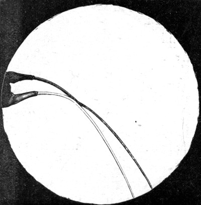
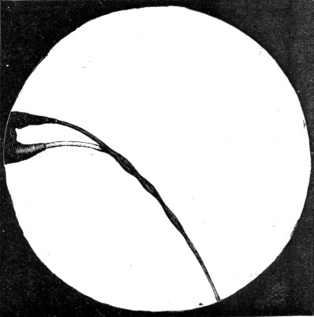
The smoky flame, as Mr. Bidwell has lately shown, does the same thing. The reason is probably that the dirt breaks through the film of air, just as dust in the air will make the two fountains join as they did when they were electrified. It is possible, though, that oily matter condensed on the water has something to do with the effect, because oil alone works quite as well as a flame; but the action of oil in this case, like its action in smoothing a stormy sea, is by no means so easily understood.
When I held the sealing-wax closer, the drops coalesced in the same way; but then they were so much more strongly electrified that they repelled one another, as similarly electrified bodies are known to do, and that produced the electrical scattering.
You may already see why the tuning fork made the drops follow in one line, but I shall explain. A musical note is, as everybody knows, caused by a rapid vibration, and the more rapid the vibration the higher the pitch of the note. For instance, I have a toothed wheel here which I can turn round very rapidly if I want to. Turning it slowly, you can hear the separate teeth knocking against a card I am holding in my other hand. Now I am turning faster, and the card is giving out a note of low pitch. As I make the wheel turn faster and faster the pitch of the note gradually rises, and if only I could turn fast enough it would give so high a note that we should not be able to hear it at all.
A tuning fork vibrates at a certain definite rate, and therefore gives a definite note. The fork now sounding vibrates 128 times every second. The nozzle is therefore made to vibrate — almost imperceptibly — 128 times a second, and to impress 128 imperceptible waists a second on the issuing cylinder of water. Now it depends entirely on the size of the jet, and on how fast the water is coming out, whether those waists are about four and a half diameters apart in the cylinder. If the jet is larger, the water must pass faster, or under greater pressure, for that to be the case; if the jet is finer, a lower speed will do.
And if it happens that the waists so made are anywhere about four diameters apart, then even though they are so slightly developed that you could not detect the least change of diameter in an exact drawing of them, they will grow at a great rate. The water column will therefore break up regularly: every drop will be like the one behind it and like the one in front of it, instead of all being different, as they are when the breaking up depends on nothing but accidental tremors. And if the drops are all alike in every respect, they of course all follow the same path, and so appear to fall in a continuous stream.
The jet breaks up most easily when the waists are about four and a half diameters apart; but it will break up, as I said, under the influence of a considerable range of notes, which set the waists at other distances, provided those distances are more than three diameters. If two notes are sounded at the same time, then very often each will produce its own effect, and the result is that drops of two different sizes are formed alternately, which makes the jet divide into two separate streams. Three, four or even many more distinct streams can be produced this way.
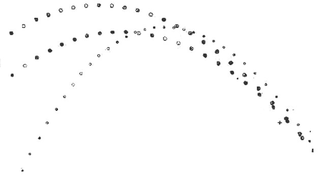
I can now show you photographs of some of these musical fountains, taken by the instantaneous flash of an electric spark, in which you can see the separate paths described by drops of different sizes (Figure 46). In one photograph there are eight distinct fountains, all breaking from the same jet but following quite distinct paths, each of them clearly marked out by a perfectly regular series of drops. You can also see, in these photographs, drops actually in the act of bouncing against one another, flattened where they meet as if they were rubber balls. In the photograph now on the screen, the effect of this rebound — which happens at the place marked with a cross — is to hurry on the upper and more forward drop and to hold the other one back, and so to send them travelling at slightly different speeds in slightly different directions. That is why they afterwards follow distinct paths. The smaller drops had no doubt been acted on in the same way, but the part of the fountain where it happened was just outside the photographic plate, so there is no record of it.
The very little drops I have so often spoken about are generally thrown out sideways from a fountain of water under the influence of a musical sound, after which they describe neat little curves of their own, quite distinct from the main stream. They can of course only get out sideways after one or two bounces off the regular drops in front of them and behind them. You can easily show that they are really formed lower down than the place where they first become visible, by taking a piece of electrified sealing-wax, holding it near the stream close to the nozzle, and raising it gradually. When it comes opposite the place where the little drops are really formed, it will act on them more powerfully than on the large drops, and will pull them out at once from a place where the moment before none seemed to exist. They will then circulate in perfect little orbits round the sealing-wax, just as the planets do round the sun — except that here, being met by the resistance of the air, the orbits are spirals, and after many revolutions the little drops fall onto the wax at last, just as the planets would fall into the sun after many revolutions if their motion through space were interfered with by friction of any kind.
There is only one thing still needed to make the demonstration of a musical jet complete, and that is that you should see these drops yourselves, in their different positions, in a real fountain of water. If I were to produce one powerful electric spark, it is true that some of you might catch sight of the drops for an instant, but I do not think most of you would see anything at all. But suppose that instead of making one flash only, I made another just as each drop had travelled to the position the one in front of it occupied before, and then another when each had moved on one place again, and so on. Then all the drops, at the moments the flashes of light fell on them, would be occupying the same positions as before, and so every drop would appear to hang fixed in the air — though of course they are all really travelling quite fast enough.
If, however, I do not quite manage to keep exact time with my flashes of light, a curious appearance is produced. Suppose the flashes follow one another a little too quickly. Then each drop will not quite have had time to reach its proper place at each flash, and so at the second flash all the drops will be seen slightly behind the positions they occupied at the first; at the third flash, further behind still; and so on. They will therefore appear to be moving slowly backwards. Whereas if my flashes do not follow quite quickly enough, then every time there is a flash the drops will have travelled a little too far, and so they will all appear to be moving slowly forwards.
Now let us try the experiment. There is the electric lantern, throwing a powerful beam of light onto the screen. I bring this to a focus with a lens and then let it pass through a small hole in a piece of card. The light then spreads out and falls on the screen. The fountain of water is between the card and the screen, so it casts a shadow which is conspicuous enough. Now I place just behind the card a little electric motor, which will spin a disc of card with six holes near its edge round very fast. The holes come opposite the hole in the fixed card one after another, so at every turn six flashes of light are produced. When the card is turning about 21 1/2 times a second, the flashes will follow one another at the right rate. I have started the motor, and after a moment or two I shall have the right speed. I can tell when I have it by blowing through the holes, which produces a musical note: higher than the fork if the speed is too high, lower than the fork if it is too low, and exactly the same as the fork when it is right.
To make it still more obvious when the speed is exactly right, I have put the tuning fork in the beam as well, between the light and the screen, so that you can see it lit up and see its shadow on the screen. I have not let the water flow yet; I want you to look at the fork. For a moment I have stopped the motor, so that the light is steady, and you can tell the fork is moving because its legs look blurred at the ends, where of course the movement is fastest. Now the motor is started, and almost at once the fork looks quite different. It now looks like a piece of rubber slowly opening and shutting — and now it appears perfectly still, though the noise it is making shows that it is anything but still. The legs of the fork are vibrating, but the light only falls on them at regular intervals which match their movement, and so, just as I explained in the case of the water drops, the fork appears to be at rest. Now the speed is slightly altered, and, as I have explained, each new flash of light comes just too soon or just too late and shows the fork a little before or a little behind the position the previous flash showed. You therefore see the fork slowly going through its motions, though in reality its legs are moving backwards and forwards 128 times a second. By watching the fork, or its shadow, you can tell whether the light is keeping exact time with the vibrations, and therefore with the water drops.
Now the water is running, and you see all the separate drops apparently stationary, strung like pearls or beads of silver upon an invisible wire (see the Frontispiece). If I make the card turn ever so little more slowly, all the drops will appear to march slowly onwards; and what is so beautiful — though I am afraid few of you will see it — each little drop can be seen gradually breaking off, drawing out a waist which becomes a little drop of its own; and then, when the main drop is free, it slowly swings about, becoming wide and long, or turning over and over as it goes on its way. If a double or multiple jet happens to be forming, you can see the little drops moving up to one another, squeezing each other where they meet, and bouncing away again.
Now the card is turning a little too fast, and the drops appear to be moving backwards, so that the water seems to be coming up out of the tank on the floor, going quietly over my head, down into the nozzle, and so back into the water supply of the building. Of course nothing of the kind is happening, as you know perfectly well, and as you will see if I simply try to put my finger between two of these drops: the water splashing in all directions shows that it is not moving quite as quietly as it appears. There is one more thing I should mention about this experiment. Every time the flashing light gains or loses one complete flash on the motion of the tuning fork, the fork will appear to make one complete swing, and the water drops will appear to move back or forward by one place.
I must now come to one of the most beautiful applications of these musical jets to a practical purpose that it is possible to imagine. What I shall show you now are a few out of a great number of experiments by Mr. Chichester Bell, cousin of Mr. Graham Bell, the inventor of the telephone.
To begin with, I have a very small jet of water forced through the nozzle at great pressure, as you can see if I point it at the ceiling — the water rises eight or ten feet. Now if I let this stream fall on a rubber sheet stretched over the end of a tube about as big as my little finger, the little sheet will be pushed down by the water, and pushed down further if the stream is stronger. If I hold the jet close to the sheet, the smooth column of liquid presses on it steadily and it stays quiet. But if I gradually take the jet further away, then any waists that have formed in the liquid column — which grow as they travel — make their existence perfectly plain. When a wide part of the column strikes the sheet, the sheet is pushed down rather more than usual; when a narrow part follows, it is pushed down less.
In other words, the very slightest vibration given to the jet is magnified by the growth of the waists, and the rubber sheet reproduces the vibration on a magnified scale. Now if you remember that sound consists of vibrations, you will understand that a jet is a machine for magnifying sound. To show that this is so: I am directing the jet onto the sheet now, and you can hear nothing. But I shall hold a piece of wood against the nozzle — and now, if the jet on the whole tends to break up at one particular rate rather than any other, or if the wood or the rubber sheet vibrates most readily at some particular rate, then the first few vibrations at that rate will be given to the wood, which will impress them on the nozzle and so on the cylinder of liquid, where they will be magnified. The result is that the jet begins to sing of its own accord, giving out a loud note (Figure 47).
Now I shall take the piece of wood away. On placing an ordinary lever watch against the nozzle, the jolt given to the case at every tick — small though it is, far too small for you to detect — jolts the nozzle too, and so starts a neck in the jet of water which grows as it travels, and produces a loud tick, audible in every part of this large room (Figure 48). Now I want you to notice how much the vibration is magnified by the action I have described. I hold the nozzle close to the rubber sheet, and you can hear nothing. As I gradually raise it, a faint echo appears, and grows louder and louder, until at last it is more like a hammer striking an anvil than the tick of a watch.
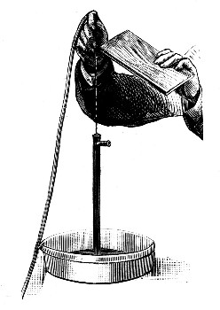
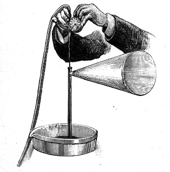
I shall now change this watch for another, which I am able to use thanks to a friend. This watch is a repeater — that is, if you press a button it will strike first the hour, then the quarters, and then the minutes. I think the water jet will let you all hear what time it is. Listen! One, two, three, four;... ting-tang, ting-tang;... one, two, three, four, five, six. Six minutes after half-past four. Notice that you not only heard the number of strokes; the jet faithfully reproduced the musical notes too, so that you could tell one note from the others.
I can make the jet play a tune in the same way, simply by resting the nozzle against a long stick which is pressed against a musical box. The musical box is carefully shut up in a double box of thick felt, and you can hardly hear anything from it; but the moment the nozzle is rested against the stick and the water is directed onto the rubber sheet, the sound of the box is heard loudly — I hope in every part of the room. It is usual to speak of a fountain as playing; it is now clear that a fountain can even play a tune. There is, however, one peculiarity which is perfectly evident. The jet breaks up at certain rates more easily than at others — or in other words, it responds to certain sounds in preference to others. You can hear that as the musical box plays, certain notes are emphasized in a curious way, much the same effect you get if you lay a penny on the upper strings of a horizontal piano.
Now, returning to our soap bubbles: you may remember that I said the catenoid and the plane were the only figures of revolution which have no curvature, and which therefore produce no pressure. There are plenty of other surfaces which appear to be curved in all directions and yet have no curvature, and which therefore produce no pressure — but these are not figures of revolution; that is, they cannot be got by simply spinning a curved line about an axis. They can be produced in any quantity by making wire frames of various shapes and dipping them in soap and water. When you take them out, a wonderful variety of surfaces of no curvature will be found on them.
One such surface is the one known as the screw surface. To produce it, all you need do is take a piece of wire wound a few times into an open helix — commonly called a spiral — and bend the two ends so as to meet a second wire passing down the centre. The screw surface that appears when this frame is dipped in soap water is well worth seeing (Figure 49). It is impossible to give any idea of the perfection of the form in a picture, but fortunately this is an experiment anybody can easily perform.
Then again, if a wire frame is made in the shape of the edges of any of the regular geometrical solids, very beautiful figures will be found on it after it has been dipped in soap water. In the case of the triangular prism these surfaces are all flat, and at the edges where the planes meet one another there are always three meeting each other at equal angles (Figure 50). Since the frame is three-sided, that is not surprising.
After looking at this three-sided frame with its three films meeting down the central line, you might expect that a four-sided or square frame would have four films meeting each other in a line down the middle. But here is a curious thing: it does not matter how irregular the frame may be, or how complicated a mass of froth may be — there can never be more than three films meeting in an edge, or more than four edges, or six films, meeting in a point. What is more, the films and the edges can only meet one another at equal angles. If by some accident four films do meet in the same edge for a moment, or if the angles are not exactly equal, then the form, whatever it is, is unstable. It cannot last: the films slide over one another and never rest until they have settled into a position in which the conditions of stability are satisfied.
This can be illustrated by a very simple experiment which you can easily try at home, and which you can see projected on the screen now. There are two pieces of window glass about half an inch apart, forming the sides of a sort of box, into which some soap and water have been poured. On blowing through a pipe which is under the water, a great number of bubbles are formed between the plates. If the bubbles are all large enough to reach across from one plate to the other, you will see at once that there are nowhere more than three films meeting one another, and that where they meet, the angles are all equal. The curvature of the bubbles makes it difficult to see at first that the angles really are all alike; but if you look only at a very short piece close to where they meet, and so avoid being confused by the curvature, you will see that what I have said is true. You will also see, if you are quick, that when the bubbles are blown four films do sometimes meet for a moment — but that the films then at once slide over one another and settle down into their only possible position of rest (Figure 51).
The air inside a bubble is generally under pressure, produced by the bubble's elasticity and curvature. If the bubble would let air pass through it from one side to the other, then of course it would soon shut up, just as it did when a ring was hung on one and the film inside the ring was broken. But there are no holes in a bubble, so you would expect that a gas like air could not get through to the other side. Nevertheless it is a fact that gases can slowly get through — and in the case of certain vapours the process is far quicker than anybody would think possible.
Ether gives off a vapour which is very heavy and which also burns very easily. This vapour can get to the other side of a bubble almost at once. I shall pour a little ether onto blotting paper in this bell jar and fill the jar with the heavy vapour. You can tell that the jar is full of something, not by looking at the jar, because it appears empty, but by looking at its shadow on the screen. Now I tilt it gently to one side, and you see something pouring out of it, which is the vapour of ether.
It is easy to show that this vapour is heavy: all you need do is drop a bubble into the jar, and the moment the bubble meets the heavy vapour it stops falling and floats on the surface, as a cork floats on water (Figure 52). Now let me test the bubble and see whether any of the vapour has got inside. I pick it up out of the jar with a wire ring and carry it to a light, and at once there is a burst of flame. But that is not enough to show that the ether vapour has passed to the inside, because enough of it might have condensed on the outside of the bubble to make it inflammable. You remember that when I poured this vapour onto water in the first lecture, enough condensed to weaken the water skin so much that the wire frame could get through to the other side.
However, I can settle whether that is the true explanation by blowing a bubble on a wide pipe and holding it in the vapour for a moment. Now, on taking it out, you notice that the bubble hangs like a heavy drop: it has lost the perfect roundness it had at first, which looks as if the vapour had found its way in. And that is put beyond doubt by bringing a light to the mouth of the tube, when the vapour, forced out by the elasticity of the bubble, catches fire and burns with a flame five or six inches long (Figure 53). You might also have noticed that when the bubble was taken out, the vapour inside began to pass out again and fell away in a heavy stream — though you could only see that by looking at the shadow on the screen.
You may have noticed, when I made the drops of oil in the mixture of alcohol and water, that when they were brought together they did not unite at once: they pressed against one another and pushed each other away if they were allowed to, exactly as the water drops did in the fountain I showed you a photograph of. You may also have noticed that the drops of water in the paraffin mixture bounced off one another — or, if they were filled with the paraffin, formed bubbles in which other small drops of both water and paraffin often remained floating.
In all these cases there was a thin film of something between the drops which they were unable to squeeze out: water, paraffin, or air, as the case might be. Will two soap bubbles, knocked together, also be unable to squeeze out the air between them? This you can try at home just as well as I can here, but I shall do the experiment at once. I have blown a pair of bubbles, and now when I knock them together they remain distinct and separate (Figure 54).
Next I shall place a bubble on a ring which it is just too large to get through. In my hand I hold another ring carrying a flat film, made by putting a bubble on it and breaking it on one side. If I gently press the bubble with the flat film I can push it through the ring to the other side (Figure 55) — and yet the two have never really touched one another at all. The bubble can be pushed backwards and forwards this way many times.
I have now blown a bubble and hung it below a ring. To this bubble I can hang a second ring of thin wire, which pulls it a little out of shape. Since the pressure inside is less than the pressure that would go with a complete sphere, and since it is greater than the pressure outside — and we can tell both of those by looking at the caps — the curve must be one of those shown by the dotted lines at C or E in Figure 31. But without considering the curve any further, I shall push the end of the pipe inside, blow another bubble in there, and let it go. It falls gently until it comes to rest on the outer bubble — not at the bottom, because the heavy ring is keeping that part out of reach, but along a circular line higher up (Figure 56).
I can now drain the heavy drops of liquid away from below the bubbles with a pipe, and leave them clean and smooth all over. Now I can pull the lower ring down, squeezing the inner bubble into a shape like an egg (Figure 57); or swing it round and round; and then, with a little care, peel the ring away from the bubble and leave them both perfectly round in every direction (Figure 58). I can draw the air out of the outer bubble until you can hardly see any space between them, and then blow in again — and the harder I blow, the more obvious it is that the two bubbles are not touching at all. The inner one is now spinning round and round in the very centre of the large one; and finally, on breaking the outer one, the inner one floats away none the worse for its very unusual treatment.
There is a pretty variation on that last experiment, which does however require a little green dye called fluorescein to be dissolved in a separate dish of the soap water. Then you can blow the outer bubble with clean soap water and the inner one with the coloured water. If you look at the two bubbles by ordinary light you will hardly notice any difference; but if you let sunlight, or electric light from an arc lamp, shine on them, the inner one appears a brilliant green while the outer one stays clear as before. They do not mix at all — which shows that although the inner one appears to be resting against the outer one, there is really a thin cushion of air between them.
Now you know that coal gas — the gas piped to the lamps — is lighter than air, and so a soap bubble blown with gas floats straight up to the ceiling when you let it go. I shall blow a bubble on a ring with coal gas. It is soon obvious that it is pulling upwards. I shall go on feeding it with gas, and I want you to notice the very beautiful shapes it takes (Figure 59 — but imagine the globe inside it removed). These are all exactly the curves a water drop takes when hanging from a pipe, except that they are the other way up. The strength of the skin is now barely able to withstand the pull — and now the bubble breaks away, just as the water drop did.
Next I shall place a bubble blown with air on a ring, and blow inside it a bubble of air and gas mixed. Of course it floats up and rests against the top of the outer bubble (Figure 60). Now I shall let a little gas into the outer one, until the gas surrounding the inner bubble is about as heavy as the inner bubble itself. It no longer rests against the top; it floats about in the centre of the large bubble (Figure 61), exactly as the drop of oil did in the mixture of alcohol and water. You can tell that the inner bubble really is lighter than air, because if I break the outer one, the inner one rises rapidly to the ceiling.
Instead of blowing the first bubble on a heavy fixed ring, I shall now blow one on a light ring made of very thin wire. This bubble contains nothing but air. If I now blow a bubble of coal gas inside it, the gas bubble will try to rise and will press against the top of the outer one hard enough to carry up the wire ring, a yard of cotton, and some paper tied to the cotton (Figure 62) — and all this time, though it is only the inner bubble that tends to rise, the two are not really touching one another at all.
I have now blown an air bubble on the fixed ring and pushed up inside it a wire with a ring on the end. On this inner ring I blow a second air bubble. The next bubble I blow contains gas, and it goes inside the other two, and when I let it go it rests against the top of the second bubble. Next I make the second bubble a little lighter by blowing a little gas into it, and then make the outer one larger with air. Now I can peel off the inner ring and take it away, leaving the two inner bubbles free inside the outer one (Figure 63). And now the multiple reflections of the brilliant colours of the different bubbles from one to another, set off by the beautiful shapes the bubbles themselves take, give the whole thing a degree of symmetry and splendour that you may go a long way to see equalled in any other way. I have only to blow a fourth bubble in real contact with the outer bubble and the ring for the whole thing to peel off and float away with the other two inside it.
We have seen that bubbles and drops behave in very much the same way. Let us see whether electricity has the same effect on bubbles that it had on drops. You remember that a piece of electrified sealing-wax stopped a fountain of water from scattering, because where two drops met they joined together instead of bouncing. Now there are on these two rings a pair of bubbles which are just resting against one another, but not really touching (Figure 64). The instant I take out the sealing-wax, you see them join together and become one (Figure 65). So two soap bubbles let us detect electricity, even in a minute quantity, just as two fountains of water did.
We can also use a pair of bubbles to prove one of the well-known facts about electricity: that inside an electrical conductor it is impossible to detect any influence of electricity outside, however much of it there may be, and however close to the surface you go. So let us take the two bubbles shown in Figure 56 and bring an electrified stick of sealing-wax near. The outer bubble is a conductor, so there is no electrical action inside it — and you can see that this is so, because although the sealing-wax is so near the bubble that it pulls the whole thing over to one side, and although the inner bubble is so close to the outer one that you cannot see any space between them, the two bubbles remain separate. Had there been the slightest electrical influence inside, even to a depth of one hundred-thousandth of an inch, the two bubbles would have come together instantly.
There is one more experiment I must show you, and it will be the last. It is a combination of the last two, and it shows beautifully the difference between an inside and an outside bubble. I have here a plain bubble resting against the side of the pair I have just been using. The instant I take out the sealing-wax, the two outer bubbles join, while the inner one, quite unharmed, and the heavy ring slide down to the bottom of what is now a single outer bubble (Figure 66).
And now that our time has run out, I must ask you whether that admiration and wonder we all feel when we play with soap bubbles has been destroyed by these lectures — or whether, now that you know more about them, it has grown. I hope you will all agree with me that the actions on which such common, everyday things as drops and bubbles depend — actions which have occupied the attention of the greatest scientists from the time of Newton to the present day — are not so trivial as to be unworthy of the attention of ordinary people like ourselves.
I hope the following practical hints may be useful to those who want to perform the experiments already described successfully for themselves.
A sheet of thin rubber, about the thickness of the rubber used for balloons as it is before they have been blown up, must be stretched over a ring of wood or metal eighteen inches in diameter and securely wired round the edge. The wire will hold the rubber better if the edge is grooved. This does not work if it is tried on a smaller scale. The experiment was shown by Sir William Thomson at the Royal Institution.
[Modern note: A large sheet of thin latex, or a balloon cut open, will serve. Eighteen inches is not an exaggeration — Boys is right that the small-scale version fails.]
This is easily made from a light glass globe about two inches in diameter — a silvered ball for decorating a Christmas tree, for instance, or the bulb of a pipette, which is what I used. Pass a piece of wire about a twentieth of an inch thick through the open necks of the bulb, and fix it there permanently and watertight by working melted sealing-wax into the necks. An inch or two above the globe, fasten a flat frame of thin wire by soldering — or, if that is too difficult, by tying and sealing-wax. A lump of lead must then be fastened or hung onto the lower end and gradually scraped away until the wire frame is just barely unable to force its way up through the surface of the water. None of the dimensions or materials mentioned matter in the least.
Get a piece of copper wire gauze with about twenty wires to the inch and cut a round piece about eight inches across out of it. Lay it on a round block of such a size that the gauze projects about an inch all round. Then go gently round and round with your hands, pressing the edge down and keeping the top flat, until the sides are turned down evenly all round. This is quite easy, because the wires will allow the kind of distortion needed. Then wind a few turns of thick wire round the turned-up edge to stiffen the sides. This ought to be soldered in place, but careful wiring will probably be good enough.
Melt some paraffin wax, or one or two paraffin candles of the best quality, in a clean flat dish — not over the fire, which would be dangerous, but on a hot plate. When it has melted and is clear like water, dip the sieve in; then, when the whole thing is hot, take it out quickly and knock it once or twice on the table to shake the wax out of the holes. Leave it upside down until it is cold, and then be careful not to scratch or rub the wax off. This is best done somewhere a mess does not matter.
[Modern note: Molten wax will catch fire if it gets hot enough, and it cannot be put out with water. Melt it in a bowl standing in a pan of simmering water, and never over a direct flame.]
There is no difficulty either in filling the sieve or in setting it to float on water.
Get some quill glass tube from a chemist — that is, tube about the thickness of a pen. If it is more than, say, a foot long, cut a piece off by first making a firm scratch in one place with a three-cornered file, after which it will break there easily.
To make very narrow tube out of this, hold it near the ends in your two hands, very lightly, so that the middle is high up in the brightest part of an ordinary bright flat gas flame. Keep turning it until at last it becomes so soft that it is difficult to hold it straight. It can then be bent into any shape you like. But if you want to draw it out, hold it in the flame longer still, until the black smoke on it begins to crack and peel up. Then take it quickly out of the flame and pull the two ends apart, and a long narrow tube will form between them. This can be made finer or coarser by regulating the heat and the way you pull it out. No directions will teach anyone as much as a very little practice.
For drawing out tubes, the flame of a Bunsen burner or a blowpipe is more convenient; but for bending tubes nothing is as good as the flat gas flame. Do not clean the smoke off until the tubes are cold, and do not hurry the cooling by wetting them or blowing on them. In the country, where gas is not to be had, the flame of a large spirit lamp can be made to do, though it is not as good as a gas flame.
The narrower these tubes are, the higher clean water will be seen to rise in them. To colour the water, do not use paints from a paint box: they are not truly liquid and will clog the very fine tubes. Some dye which dissolves completely, as sugar does, must be used. An aniline dye called soluble blue does very well. A little vinegar added may make the colour last better.
[Modern note: Glass stays dangerously hot long after it has stopped glowing, and drawn tube ends are needle-sharp. Any water-soluble ink or food colouring will do for the dye.]
Two flat plates of glass, say three to five inches square, are all that is needed. Provided they are perfectly clean and well wetted there is no difficulty. A little soap and hot water will probably be enough to clean them.
These are best seen at dessert, in a glass about half filled with port. If port is not available, a mixture of two to three parts water and one part spirits of wine — that is, ethanol, not methylated spirits — containing a very little rosaniline, a red aniline dye, to give it a nice colour, may be used instead. A piece of the dye about the size of a mustard seed will be enough for a large wine glass. The sides of the glass should be wetted with the wine first.
Every schoolboy knows how to make these. They are not the boxes you make by cutting slits in paper. They are made simply by folding, and are then blown out, like the paper "frog," which is also made by folding.
Instead of melting gold, water rolled onto a table thickly dusted with lycopodium powder, or any other fine dust, will show the difference in shape between large and small beads perfectly — as will mercury rolled or thrown onto a smooth table. A magnifying glass will make the difference plainer still. If you use mercury, be careful that none of it falls on gold or silver coins, on jewellery, on silver plate, or on the ornamental gilding of book covers. It will do serious damage.
[Modern note: Do not use mercury. Its vapour is poisonous and a spill is very hard to clear up properly. Water rolled on a plate dusted with flour or cornflour shows everything Boys wants you to see.]
To do this really perfectly takes a great deal of care and trouble. It is easy to succeed up to a point. Pour about a tablespoonful of salad oil into a clean bottle, and pour on top of it a mixture of nine parts by volume of spirits of wine — not methylated spirits — and seven parts of water. Shake it up and leave it for a day if need be, and you will find that the oil has gathered itself together again.
Fill a tumbler with the same mixture of spirit and water, and then, with a fine glass pipe dipping about halfway down, slowly introduce a very little water. This makes the liquid in the lower part a little heavier. Now dip a pipe into the oil, take a little up by closing the top end with your finger, and drop it carefully into the tumbler. If it sinks to the bottom, a little more water is needed in the lower half of the tumbler. If it happens not to sink at all, a little more spirit is wanted in the upper half. At last the oil will float exactly in the middle of the mixture. More can then be added, taking care to keep it from touching the sides.
If the liquid below is heavier than the oil by ever so little, and the liquid above lighter by ever so little, then a drop of oil the size of a halfpenny will be almost perfectly round. It will not look round when seen through the glass, because the glass magnifies it sideways but not up and down, as you can see by holding a coin in the liquid just above it. To see the drop in its true shape, the vessel must either be a globe or have one flat glass side.
Spinning the oil so as to throw off a ring is not essential; but if you can contrive to fix a disc about the size of a threepenny piece onto a straight wire and spin it round without shaking it, then you will see the ring break off, and either return, if you stop the rotation quickly, or else break up into three or four perfect little balls. The disc should be wetted with oil before it is dipped into the mixture of spirit and water.
Ordinary yellow soap is far better than most of the fancy soaps, which generally contain a little soap and a great deal of rubbish. Castile soap is very good, and can be got from any chemist.
Bubbles blown with soap and water alone do not last long enough for many of the experiments described here, though they can sometimes be made to work. Plateau added glycerine, which greatly improves how long they last. The glycerine should be pure; common glycerine is not good, but Price's answers perfectly. The water should be pure distilled water; but if you cannot get that, clean rainwater will do. Do not take the first water that runs off a roof after a dry spell — wait until it has been raining for some time, and the water that runs off then is very good, especially if the roof is blue slate or glass. If fresh rainwater is not to be had, use the softest water you can get.
Instead of Castile soap, Plateau found that a pure soap prepared from olive oil is better still. This is called oleate of soda. Get it freshly prepared from a manufacturing chemist; old dry stuff that has been kept a long time is not as good. I have always used a modification of Plateau's formula which Professors Reinold and Rücker found to answer so well: they used less glycerine than Plateau did. It is best made as follows.
Fill a clean stoppered bottle three-quarters full of water. Add one-fortieth of its weight of oleate of soda, which will probably float. Leave it for a day, by which time the oleate of soda will have dissolved. Nearly fill the bottle up with Price's glycerine and shake it well, or pour it into another clean bottle and back again several times. Leave the bottle — stoppered, of course — for about a week in a dark place. Then, with a siphon, that is, a bent glass tube long enough to reach the bottom inside and further still outside, draw off the clear liquid from the scum which will have collected on top. Add one or two drops of strong liquid ammonia to every pint of liquid. Then keep it carefully in a stoppered bottle in a dark place.
Do not fetch out this stock bottle every time you want to blow a bubble; keep a small working bottle. Never put any back into the stock. In making the liquid, do not warm it and do not filter it: either will spoil it. Never leave the stoppers out of the bottles, or let the liquid stand exposed to the air longer than you must. This liquid is still perfectly good after two years' keeping.
I have given these directions in great detail, not because I am certain that every detail is essential, but because this describes exactly the way I happen to make it, and because I have never found any other solution as good. Castile soap, Price's glycerine and rainwater will almost certainly answer every purpose, and the same proportions will probably work well.
[Modern note: A modern mixture that works: about one part washing-up liquid to fifteen parts distilled water, with two or three parts glycerine, left to stand overnight and used without shaking. Boys' point stands — the solution improves with keeping and is ruined by warming or filtering.]
These can be made of any kind of wire. I have used tinned iron about a twentieth of an inch thick. The joint should be smoothly soldered, without lumps. If soldering is a problem, use the thinnest wire that is still stiff enough to hold the bubbles steady, and make the joint by twisting the end of the wire round two or three times. Rings two inches across are convenient. I have seen it recommended that the rings be dipped in melted paraffin, but I have found no advantage in it.
The nicest material for the light rings is thin aluminium wire about as thick as a fine pin — No. 26 to 30 on the Birmingham Wire Gauge — and since this cannot be soldered, the ends must be twisted. If that is not to be had, very fine wire nearly as fine as a hair (No. 36 on the same gauge), of copper or of any other metal, will answer. The rings should be wetted with the soap mixture before a bubble is placed on them, and must always be well washed and dried when you have finished.
There is no difficulty in showing these experiments. The ring with the thread may be dipped in the soap solution, or stroked across with the edge of a piece of paper, or of rubber sheet, that has been dipped in the liquid, so as to form a film on both sides of the thread. A needle, also wetted with the soap, can be used to show that the threads are loose. The same needle held in a candle flame for a moment is a convenient way of breaking the film.
For this, the bubble should be blown on the end of a short wide pipe, spread out at one end to give the bubble a better hold. The tin funnel supplied with an ordinary gazogene answers perfectly. It should be washed before it is used again for filling the gazogene.
[Modern note: A gazogene was a domestic soda-water maker. Any small metal or plastic funnel will do.]
These experiments are most conveniently done on a small scale. Pieces of thin brass tube three-eighths or half an inch across are suitable. It is best to have pieces of apparatus specially made with taps, so that you can quickly and easily stop the air leaving either bubble and put the two bubbles into communication when you want to. It should not be difficult to contrive the experiments using rubber connecting tubes pinched with spring clips instead of taps.
There is one small detail which makes all the difference between success and failure. It is to provide a mouthpiece for blowing the bubble, made of glass tube drawn out so fine that these little bubbles cannot be blown out suddenly by accident. Otherwise it is very difficult to adjust the quantity of air in such small bubbles with any accuracy.
In balancing a spherical bubble against a cylindrical one, the short piece of tube through which the air is supplied must be arranged so that it can be moved easily towards or away from a fixed piece of the same size, closed at the far end. Then a film must be spread over both ends of the short tube with a piece of paper or rubber; but there must be no film stretched across the end of the fixed tube. The two tubes must be near together at first, until the spherical bubble has been formed. They may then be separated more and more, with air blown in to keep the sides of the cylinder straight, until the cylinder is long enough to be nearly unstable. It will then show far more obviously, by changing its shape, the moment when the pressure due to the spherical bubble exactly balances that due to the cylindrical one — far more obviously than a short cylinder would. If you then measure the shadow of the bubbles, or an image formed by a lens on a screen, you will find that the sphere's diameter is very accurately double that of the cylinder.
The experiment showing the formation of water drops can be imitated very perfectly, and the movements actually made visible, with no need to use liquids at all, simply by turning Figure 35 into the old-fashioned instrument called a thaumatrope. What you then see is a true representation, because the shapes in the figure are copies of a series of photographs taken from the moving drops at the rate of forty-three photographs in two seconds.
Note: for particulars, see the Philosophical Magazine for September 1890.
Get a piece of good cardboard as large as the figure, brush it all over on one side with thin paste, lay the figure on it, and press it down evenly. Put it on a table, cover it with a few thicknesses of blotting paper, and lay a flat piece of board over the whole, large enough to cover it. You may add weights to keep it all flat. This must be left at least overnight, until the card is quite dry, or else it will curl up and be useless.
Now, with a sharp chisel or a knife — but a chisel if possible — cut out the forty-three slits near the edge, following the outline marked in black and white accurately and keeping the slits as narrow as you can. Then cut a hole in the middle to fit the projecting part of a sewing-machine cotton reel, and fasten the reel to the side away from the figure with glue or small nails. It must be fixed exactly in the middle. The edge should of course be cut down to the outside of the black rim.
Now find a pencil or other rod on which the cotton reel will turn freely, use that as an axle, and, holding the disc up in front of a looking-glass in a good light, make it turn round slowly and steadily. The image of the disc, seen in the mirror through the slits, will then represent every feature of the growing and falling drop perfectly.
As the drop grows it will gradually become too heavy to be held up. A waist will then begin to form, which rapidly narrows until at last the drop breaks away. You will see it go on falling until it disappears into the liquid below; but it has not mixed with that liquid, and so it presently reappears, having bounced back out of it. As it falls you will see it vibrating, as a result of being suddenly released from the one-sided pull. Meanwhile the neck that was drawn out will have gathered itself into a little drop, which is then violently struck by the oscillations of the drop still hanging above, and driven downwards. The hanging drop will be seen to vibrate and grow at the same time, until it breaks away again as before — and so the whole thing repeats.
To reproduce the experiment perfectly, the axle should be held firmly on a stand, and the speed should not exceed one turn in two seconds.
The effect is more convincing still if you put a screen between the disc and the mirror, so that only one of the drops can be seen.
Everything said in describing Plateau's experiment applies here too. Perfectly spherical large drops of water can be formed in a mixture made so that the lower part is very slightly heavier, and the upper part very slightly lighter, than water. Adding carbon disulfide makes the mixture heavier. This liquid — carbon disulfide — is very dangerous and has a most dreadful smell, so it had better not be brought into the house at all.
The shape of a hanging drop, and the way it breaks off, can be seen using water in paraffin alone, but it is much more obvious if a little carbon disulfide is mixed with the paraffin, so that water sinks slowly through the mixture. Pieces of glass tube open at both ends, from half an inch to an inch across, show the action best.
[Modern note: Do not use carbon disulfide. Besides being extremely flammable, it is seriously toxic to the nervous system, which was not understood in 1890. Water in paraffin alone shows the drop forming and breaking away, exactly as Boys says.]
Pour some water coloured blue into a glass vessel and cover it to a depth of several inches with paraffin, or with the paraffin mixture. Close the top end of the pipe with your thumb or the palm of your hand and dip it down into the water. Now take your hand away, and the water will rush up inside the tube. Close the top end again as before, and raise the tube until its lower end is well above the water but still under the paraffin. Then let air in very slowly, by rolling your thumb the least bit to one side. The water will escape slowly and form a large growing drop, whose size before it breaks away depends on the density of the mixture and the size of the tube.
To form a water cylinder in the paraffin, fill the tube with water as before, but this time leave the top end open. Then, when everything is still, draw the tube up rather quickly along its own length, and the water that was inside it will be left behind as a cylinder surrounded by paraffin. With a large tube it will break up into spheres so slowly that you can watch the whole process. The paraffin should be at least ten times as deep as the diameter of the tube.
To make bubbles of water in the paraffin, dip the tube down into the water with the top end open the whole time, so that the tube is mostly full of paraffin. Then close the top for a moment and raise the tube until its end is completely clear of the water. Now if you let air in slowly and raise the tube gently, bubbles of water filled with paraffin will form, and a suitable sudden movement will make them separate from the pipe, like soap bubbles from a long clay pipe. If a number of water drops are floating in the paraffin inside the pipe — and this is easily arranged — then the bubbles you make may contain a number of other drops, or even other bubbles. A very little carbon disulfide poured carefully down a pipe will form a heavy layer above the water, on which these compound bubbles will rest and float.
Cylindrical bubbles of water in paraffin can be made by dipping the pipe down into the water and drawing it up quickly without ever closing the top at all. These break up into spherical bubbles just as the cylinder of liquid broke up into spheres of liquid.
These are found in the spiral part of the webs of all the geometrical spiders. The beautiful geometrical webs can be found outdoors in abundance in the autumn, or in greenhouses at almost any time of year.
To mount a web so that the beads can be seen, take a small flat ring of any material, or a piece of cardboard with a hole cut in it. Smear the face of the ring, or the card, with a very little strong gum. Choose a freshly made web, and pass the ring or the card across it so that some of the spiral web — not the central part — is left stretched across the hole. This must be done without touching or damaging the stretched pieces anywhere except at their ends.
The beads are too small to see with the naked eye; a strong magnifying glass, or a low-power microscope, will show them and their marvellous regularity. The beads on the webs of very young spiders are not as regular as those on fully grown spiders. And those beautiful beads on spider lines early on an autumn morning, the ones easily visible to the naked eye, are not made by the spider at all: they are simply dew. They show the spherical form of small water drops very perfectly.
These are easily taken by the method Mr. Chichester Bell described. The flash of light is produced by a short spark from a few Leyden jars. The fountain, or jet, should be five or six feet from the spark, and the photographic plate should be held as close to the stream of water as possible without touching it. The shadow is then so sharply defined that the photograph can afterwards be examined with a powerful lens and will still look sharp. Any rapid dry plate will do. The room must of course be quite dark when the plate is put in position and the spark is made.
The regular breaking up of the jet can be brought about by sound produced in almost any way. The straight jet represented in Figure 41, magnified about three and a quarter times, was broken up regularly by simply whistling to it with a key. The fountains were broken up regularly by fastening the nozzle to one end of a long piece of wood, clamped at the other end to the stand of a tuning fork which was kept sounding by electrical means. An ordinary tuning fork, made to rest against the wooden support of the nozzle while it sounds, will answer quite as well, though it is not as convenient. The jet breaks up best to certain notes, but it can be tuned over a wide range by altering the size of the orifice or the pressure of the water, or both.
[Modern note: An electronic flash, or a bright LED driven in short pulses, replaces the Leyden-jar spark and is far safer; a loudspeaker pressed against the nozzle mount replaces the tuning fork and lets you sweep the frequency at will.]
It is almost impossible to fail at this very striking yet very simple experiment. A fountain of almost any size — at any rate between a fiftieth and a quarter of an inch across in the smooth part, and up to eight feet high — will stop scattering when the sealing-wax is rubbed with flannel and held a few feet away. A good size of fountain is about four feet high, coming from an orifice somewhere near a sixteenth of an inch across. The nozzle should be tilted so that the water falls slightly to one side.
The sealing-wax may be electrified by rubbing it on your coat sleeve, or on a piece of fur or flannel which is dry. It will then make little pieces of paper or cork dance — but it will still act on the fountain long after it has stopped producing any visible effect on pieces of paper, or even on a delicate gold-leaf electroscope.
This beautiful experiment of Lord Rayleigh's needs a little management to work satisfactorily. Take a piece of quill glass tube and draw it out very slightly, as described earlier, so as to make a neck about an eighth of an inch across at the narrowest point. Nick the tube there with a file and break it at that place. Connect each of these tubes, with a rubber pipe or otherwise, to a supply of water in a bottle, and pinch the tubes with a screw clip until two equal jets of water are formed. Hold the nozzles so that the jets meet at a very small angle while both are still in their smooth part. They will then bounce away from one another, without mixing, for a short while. If the air is very dusty, if the water is not clean, or if air bubbles are being carried along in the pipes, the two jets will join together at once.
In the arrangement I used in the lantern, the two nozzles were nearly horizontal, one about half an inch above the other, and very slightly converging. They were fixed in position by melting a little sealing-wax onto them. Rubber pipes connected them to two bottles about six inches above them, and screw clips regulated the supply. One of the bottles was made to stand on three pieces of sealing-wax to insulate it electrically, and the nozzle belonging to it was held by nothing but its sealing-wax fastening. The water in the bottles had been filtered, and one lot was coloured blue.
If these precautions are taken the jets will stay distinct quite long enough, and are made to recombine instantly by a piece of electrified sealing-wax six or eight feet away. They can be separated again by touching the water just as it leaves one nozzle with your finger, which deflects it; then, on quietly taking the finger away, the jet returns to its old position and bounces off the other as before. You can separate them and recombine them ten or a dozen times a minute this way.
This can only be shown to a large number of people at once by using an electric arc; but there is no need for that light if no more than one person at a time wants to see the drops evolving. It is then only necessary to make the fountain play in front of a bright background such as the sky, to break it up with a tuning fork or other musical sound as described, and then to look at it through a card disc divided equally near the edge into spaces about two or three inches wide, with a hole about an eighth of an inch across between each pair of spaces. A card disc five inches across, with six equally spaced holes half an inch from the edge, answers well.
The disc must be spun, by whatever means, very regularly, at such a speed that the tuning fork — or the stretched string, if you use one — appears still, or nearly still, when you look at it through the holes while it is vibrating. The separate drops will then be visible, and everything described in the preceding pages, and a great deal more besides, will be plain to see. This is one of the most fascinating experiments there is, and it is well worth making an effort to succeed at it.
The little motor I used is one of Cuttriss and Co.'s P.1 motors, which are very convenient for experiments of this kind. It was driven by four Grove's cells. These make it run too fast, but the speed can be reduced by shifting the brushes slightly towards the position used for reversing the motor, until the speed is almost exactly right. It is best to arrange for it to run only just too fast; then the speed can be regulated perfectly by very light pressure of a finger on the end of the axle.
For these experiments a very fine hole, about a seventy-fifth of an inch across, is the most suitable. To make one, Mr. Bell holds the end of a piece of quill glass tube in a blowpipe flame, turning it round and round constantly until the end is almost completely closed up, and then suddenly blows hard into the pipe. Out of several nozzles made this way, some are certain to work well. Lord Rayleigh generally makes nozzles by cementing to the end of a glass or metal pipe a piece of thin sheet metal with a hole of the required size in it.
The water pressure should come from a head of about fifteen feet. The water must be quite free of dust and of air bubbles, which can be arranged by passing it through a piece of tube stuffed full of flannel or cotton wool to act as a filter. There should be a yard or so of good black rubber tube, about an eighth of an inch across inside, between the filter and the nozzle. It is best not to take the water straight from the main, but from a cistern about fifteen feet above the nozzle. If there is no cistern available, a pail of water carried upstairs with a pipe coming down from it is an excellent substitute — and it has the further advantage that the head of water can easily be changed, so as to arrive at the best result.
The rest of the apparatus is very simple. All you need do is stretch a piece of thin rubber sheet, cut from a balloon that has not been blown up, over the end of a tube about half an inch across, and tie it on. The tube, which may be metal or glass, can either be fastened to a heavy foot — in which case a side tube must be joined to it, as in Figure 47 — or else be open at both ends and held in a clamp. It is a good idea to put a cardboard cone on the open end (Figure 48) if the sound is to be heard by a number of people at once. If the experimenter alone wants to hear as well as possible when the sounds are faint, he should run a piece of smooth rubber tube about half an inch across from the open end to his ear. That, however, would very nearly deafen him with anything as loud as the tick of a watch.
Experiments with ether must be done with great care, because, like carbon disulfide, it is dangerously inflammable. The bottle of ether must never be brought near a light. If a large quantity is spilled, the heavy vapour is apt to run along the floor and catch fire at a fireplace, even on the other side of a room.
Any vessel can be filled with ether vapour simply by pouring the liquid onto a piece of blotting paper which reaches up to the level of the rim. Very little is needed — say half a wine glass for a basin holding a gallon or more. In a draughty place the vapour will be lost in a short time.
Bubbles can be set floating on the vapour without any difficulty. They can be lifted out again after five or ten seconds with one of the small light rings with a handle, provided the ring is wetted with the soap solution and has no film stretched across it. Taken to a light at a safe distance, the bubble will burst into a blaze immediately. If a nearby light is not down close to the table but well up above the jar on a stand, it can be quite near with very little risk. To show the burning vapour, the same wide tube used for blowing out the candle answers well. The pear shape of the bubble, caused by its increased weight after ten or fifteen seconds in the vapour, is obvious enough when you take it out; but the falling stream of heavy vapour that comes out of it afterwards can only be shown by casting its shadow on a screen with a bright light.
[Modern note: Ether vapour is heavier than air, forms explosive mixtures, and travels — Boys' warning about it igniting at a fireplace across the room is exact and not an exaggeration. This is not an experiment to try indoors. Butane from a gas lighter refill is heavier than air too, and will float a bubble in the same way, but it is just as flammable.]
For these experiments, next to a good solution, the pipe matters most of all. A long clay pipe is no use. A glass pipe five-sixteenths of an inch across at the mouth is best. If it is merely a tube bent through a right angle near the end, moisture condensing in the tube will in time run down and destroy the bubble now and then, which is very annoying in the middle of a difficult experiment. I have made myself the pipe shown full size in Figure 67, and I do not think it is possible to improve on it. Those who are not glass-blowers will be able, with the help of a cork, to make a pipe with a trap as shown in Figure 68, which is just as good except in appearance and handiness.
In knocking bubbles together to show that they do not touch, you must take care that neither bubble meets any projection on the other, such as the wire ring or a heavy drop of liquid. Either will destroy both bubbles instantly. There is also a limit to how much violence you can use, which experience will soon teach you.
In pushing a bubble through a ring smaller than itself by means of a flat film on another ring, it is important that the bubble should not be too large — though a larger bubble can be pushed through than you would expect. It is not as easy to push it up as down, because of the heavy drop of liquid, which is difficult to drain away completely.
To blow one bubble inside another, the first, about the size of an average orange, should be blown on the underside of a horizontal ring. A light wire ring should then be hung on this bubble to pull it slightly out of shape. Thin aluminium rings are hardly heavy enough for this, so either use a heavier metal or fasten a small weight to the handle of the ring. The ring should be heavy enough that the sides of the bubble make an angle of thirty or forty degrees with the vertical where they meet the ring, as shown in Figure 56.
The wetted end of the pipe is now to be pushed in through the top of the bubble until it has gone a clear half inch or so inside. A new bubble can then be blown almost any size you like. In taking the pipe out, a slow movement will be fatal, because it will lift the inner bubble until both it and the outer one meet the pipe at the same place, which brings them into true contact. On the other hand a violent jerk will almost certainly cause too much disturbance. A rather quick movement, or a slight jerk, is all that is needed.
Before passing the pipe up through the lower ring to touch the inner bubble and drain away the heavy drop, it is advisable to steady the ring with your other hand. The surplus liquid can then be drained from both bubbles at the same time. After that, take care not to let the inner bubble come against either wire ring, and do not pass the pipe through the side where the two bubbles are very close together. To peel off the lower ring, pull it down a very little way and then tilt it to one side. The peeling will start more readily that way; but as soon as it has begun, raise the ring again so that the peeling does not go too fast, or the final jerk as it leaves the lower ring will be too much for the bubbles to survive.
Bubbles coloured with fluorescein do not show their brilliant fluorescence unless sunlight or electric light is concentrated on them with a lens or a mirror. The quantity of dye needed is so small that it may be difficult to take little enough. As much as you can pick up on the last eighth of an inch of a pointed penknife will be roughly enough for a wine glass of the soap solution. If you increase the quantity much beyond that proportion, the fluorescence becomes weaker and very soon disappears altogether. The best quantity can be found by trial in a few minutes.
To blow bubbles containing either coal gas or air, or a mixture of the two, the most convenient arrangement is a small T-shaped glass tube. One arm of the T is joined to the blowpipe by a short piece of rubber tube; the vertical limb is connected to a length of rubber pipe, an eighth of an inch across inside, long enough to reach the floor, after which it can be joined by any kind of pipe to the gas supply. The gas can be stopped either by pinching the rubber tube with your left hand, if that is free, or by treading on it if both hands are busy. Meanwhile air can be blown in through the other arm of the T, and that end closed with your tongue when gas alone is wanted. This end of the tube should be slightly flared while it is hot, by pushing the cold tang of a file rapidly into it and twisting at the same time, so that it can be held lightly by the teeth without any fear of slipping.
[Modern note: Coal gas was the piped town gas of the day. Use helium instead: it is lighter than air, it is not flammable, and a party balloon cylinder with a length of tube fitted to it does everything Boys asks of the gas supply.]
If you cannot get a light T-piece, or such a long length of small rubber tube, then you must take your mouth off the pipe and slip the rubber tube in whenever air is to be changed for gas. This makes the handling more difficult, but every one of the experiments can still be done that way, except the one with three bubbles.
In every case the pipe must be made to enter a bubble at its highest point in order to start an inner one. If it is pushed horizontally through the side, the inner bubble is certain to break. If the inner bubble is being blown with gas it will soon start to rise; the pipe must then be turned over in such a way that the inner bubble does not creep along it and so meet the outer one at the place where the pipe goes through. A few tries will show you what I mean. The inner bubble may then be allowed to rest against the top of the outer one while it is being enlarged.
When, after taking the pipe out, you want to blow more air or gas into either the inner or the outer bubble, it is not safe to put the pipe back in and start blowing straight away: the film now stretched across the mouth of the pipe will probably become a third bubble, and under these circumstances that is almost certain to cause a failure. Drawing the air in for an instant destroys that film by pulling it into the pipe. Air or gas can then be blown in without danger.
If the same experiment is done on a light ring with cotton and paper attached, your left hand will be occupied holding the ring, so the gas must be controlled with your foot, or by a friend. The light ring should be at least two inches across. Once the inner bubble has begun to carry the ring and the rest away, it is possible, by catching hold of the paper and giving a judicious pull, to make the two bubbles leave the ring and escape into the air, one inside the other. For this, use the smallest ring that will carry the paper. With larger rings the same effect can be got by tilting the ring so that the outer bubble peels off, or by placing the mouth of the pipe against the ring and blowing a third bubble in real contact with both the ring and the outer bubble, which will help the peeling along.
To blow three bubbles, one inside the other two, is more difficult. The following method I have found fairly reliable. First blow a bubble the size of a large orange above the ring. Then take a small ring about an inch across, with a straight wire coming down from one side as a handle, wet it with the solution, and pass it carefully up through the fixed ring so that the small ring is held well inside the bubble. Now pass the pipe, freshly dipped in the solution, into the outer bubble — call it No. 1 — until it is quite close to the small ring, and begin to blow bubble No. 2. This must be started with the pipe almost touching the inner ring, because the film on that ring would destroy a bubble that had grown to any size.
Withdraw the pipe, dip it in the liquid, and put it into the inner bubble, taking care to keep these two bubbles from meeting anywhere. Now blow a large gas bubble, No. 3, which can rest against the top of No. 2 while it grows. No. 2 may now rest against the top of No. 1 without danger. Take the pipe out of No. 3 by lowering it gently, and let some gas into No. 2 to make it lighter, and at the same time reduce the pressure between Nos. 2 and 3. Presently the small ring can be peeled off No. 2 and taken away altogether. If that proves difficult, withdraw the pipe from No. 2 and blow air into No. 1 to enlarge it, which makes the process easier. Then take the pipe out of No. 1.
The three bubbles are now resting one inside another. By blowing a fourth bubble against the fixed ring, as described above, No. 1 will peel off and all three will float away. No. 1 can, while it is peeling, be transferred to a light wire ring with paper and so on hanging from it. This description sounds complicated, but after a little practice the whole process can be carried out almost with certainty, and in far less time than it takes to describe. In fact it can be done so quickly, and looks so simple, that nobody would suppose so many details had to be attended to.
These experiments are on the whole the most difficult to perform successfully. The following details should be enough to prevent failure.
Two rings are formed at the ends of a pair of wires about six inches long in the straight part. About an inch at the end away from the ring is turned down at a right angle. These turned-down ends rest in two holes drilled vertically in a non-conductor such as ebonite, two or three inches apart. Then, if all is well, the two rings are horizontal and at the same level, and can be moved towards or away from one another. Separate them by a few inches and blow a bubble above or below each, making them nearly the same size. Then bring the two rings closer until the bubbles just — and only just — rest against one another. Although they can be hammered together without joining, they will not stay resting like that for long, because their convex surfaces can squeeze the air out easily.
The ebonite should not be perfectly warm and dry, because then it is sure to be electrified, and that will give trouble. It must not be wet either, because then it will conduct and the sealing-wax will produce no result at all. If it has been used to support the rings for some of the earlier experiments, it will have been splashed enough by bursting bubbles to be in the best possible condition. It should, however, be wiped well from time to time.
A stick of sealing-wax should be held ready under your arm, in a fold or two of dry flannel or fur. If the wax is very strongly electrified it is apt to be far too powerful, and to make the bubbles destroy each other when it is presented to them. A feeble electrification is enough; then the instant it is exposed, the bubbles coalesce.
The wax may be brought so near a bubble which has another one resting inside it that it pulls them both over to one side — but the inner one is screened from electrical action by the outer one. It is important not to bring the wax very close, because then the bubble will be pulled far enough to touch it and will break. Wetting the wax makes electrifying it again very uncertain.
In showing the difference between an inner and an outer bubble, the same remarks apply about undue pressure, over-electrification, and wasting time. In this experiment I have generally found it advisable not to drain the drops from both bubbles: their weight seems to steady them. Drain the outer bubble, and then, if it is not too large, the process of joining outer bubbles electrically without harming the inner one can be repeated many times over. I once made eight or nine single bubbles unite with the outer one of a pair, one after another, before it became too unwieldy for any further additions.
It would be going outside my subject to say anything about the management of lanterns. I may, however, mention that while the experiments with small bubbles are best projected onto the screen with a lens, the larger bubbles described in the last lecture can only be projected by their shadows. For this the condensing lens is removed and the bare light alone is used. An electric arc is far better than a limelight, both because the shadows are sharper and because the colours are so much more brilliant. No oil lamp would answer, even if it gave light enough, because the flame would be far too large to cast a sharp shadow.
In these hints, which have grown into a rather formidable chapter of their own, I have given all the details that a good deal of experience has shown to be necessary for performing the experiments successfully in public, so far as I am able to give them. I hope they will be a real help to those who are not in the habit of carrying out experiments but who would like to perform these for their own satisfaction. And though people who are not experimenters may think the hints are overloaded with detail, it is likely that in repeating the experiments they will find, here and there — in spite of all my care to guard against unforeseen difficulties — that still more detail would have been welcome.
Though it is unusual to end a book like this with full directions for carrying out the experiments described in it, I believe the innovation is a good one in this case, and all the more because so many of the experiments need none of the elaborate apparatus that is so often necessary.